GACO Design System
Tudo o que existe hoje sobre o design do GACO, numa tela. Os valores de token, os 95 ícones, as telas e os componentes saem direto do código integrado. As regras e decisões saem dos documentos em Docs/, que aparecem inteiros no fim da página.
Fonte da verdade
A regra do dono de 25/09 é de documento único: a regra visual vive no padrão de telas, o valor de cada token vive na v4, e o mapa dos modelos vive em modelos de página. É proibido criar outro documento de regra visual.
Não é fonte de valor visual: o guia v3 (design-system.md, revogado na linha 3), o GACO-Design-System-v3.html, o legado.css, o portal/gaco_app.html e a pasta ~/Downloads/Designs sistens e projetos/ de 26/03. A única exceção é a Home aprovada, que vale como estrutura de blocos.
Estado de cada item do Design System
Da seção 5 da LISTA-UNICA.md e do plano V4.1 a V4.8.
| Item | Estado | Como conferir |
|---|---|---|
Tokens em 3 camadas, papéis de cor, apelidos com tema em :root, [data-theme] | feito | temaDosApelidos.test.ts |
| Paleta de rótulo de 8 tons gerada e escala de dados | feito | test_paleta_de_rotulos |
| Densidade por pessoa 36 / 44 / 52 | feito | menu do usuário |
| Camada (Radix), filtros com OU e "não é", "Mais filtros (N)", "(sem X)" | feito | DS passos 4 e 7 |
| Erro em 3 partes, resumo com links, mensagem por tipo | feito | parecer nº 38 |
| SeletorDePeriodo | feito | parecer nº 35 |
| Breakpoints constantes 640 / 900 / 1280 / 1440 | feito | breakpoints.test.ts |
| Glossário renomeável, um termo por conceito | feito | Configuração › Personalização › Nomes |
| V1 chip só com o ponto colorido · V2 listras só na compacta · V3 curvas · V4 aba na cor do módulo · V5 asterisco | feito | tokens.css, medidos nos dois temas |
| Cor da Home (fúcsia) e do portal (marca), ícones de arquivo, portal sem GACO | feito | 1b3dfb0a |
| Homes em 4 variações, superadmin e portal | feito | d5e2bf2c |
| Erro não some sozinho (#318) | feito | e276bb1d |
| Zero emoji nas telas (790 em 239 arquivos) · V4.6 | feito | semEmojiNaTela.test.ts; os 116 de lib/icones.tsx ficam, traduzem emoji que é dado do cliente |
| Família de cores de módulo reprojetada, ΔE ≥ 0,10 entre vizinhos | feito, a rever com o dono | gerar_rotulos.py; projetos #C7B9FC fica fraco no branco |
| Ordem, filtro e página no servidor (#317) | 6 de 7 telas | ordenacaoDaBusca.test.tsx |
| Raios (#311) e acessibilidade de tabela e formulário (#312) | parcial | known-issues |
| Motor de tabela TanStack, colunas por usuário | ação em massa feita; TanStack e colunas pendentes | Tabela.selecao, ModeloBusca.emMassa |
| V4.8 capturas por modelo nos dois temas e a 390px | pendente | — |
Marca e white-label
O GACO tem uma assinatura própria, mas a regra do dono de 24/09 é que o cliente vê a marca dele em tudo. "GACO" só aparece onde o cliente deixar, ou em contexto sem cliente.
Assinatura do produto
GACO.
Cliente sem logo
Ó Órbita Consultoria
O que o cliente configura
Onde a marca do cliente aparece
| Lugar | Regra |
|---|---|
| Barra do app | Logo do cliente. Sem logo, o monograma e o nome do cliente, nunca "GACO". O nome do cliente não fica em texto na barra desde 24/09: vai no tooltip do prédio, que só aparece para quem tem mais de um cliente. |
| Botão principal | Decisão do dono de 27/09 (Q1): o gradiente da ação segue a cor de ação do cliente, derivada com contraste garantido. Sem cor escolhida, vale o laranja. Com a cor quase sumindo no fundo, o servidor manda --cta-borda e troca o brilho por sombra neutra. |
| Portal do cliente | Nada do GACO (#411, #412, guarda semMarcaDoGacoNoPortal.test.ts). Tema claro por padrão, densidade confortável, --cor-modulo-portal igual à --marca do cliente. |
| Páginas públicas, site, landing | Casca TelaPublica com a marca e a hora do cliente (#508). A prévia do site usa a identidade do cliente, nunca os tokens do GACO. |
| E-mails | Rótulos do cliente trocados no assunto e no texto visível pela porta única enviar_email. Texto escrito pelo cliente passa rotular=False. O e-mail transacional (email_service.py) ainda tem cores do GACO fixas: cabeçalho #1E3A8A e logo em #F97316. |
| PDFs e certificado | Só parcial. O certificado leva o nome do cliente (nome_da_marca, nunca "GACO"), mas com Georgia e borda de 10px em #0f172a fixas. O QBR não tem logo nem cor. O relatório base ainda escreve "GACO." (W2 aberto em rastreabilidade-parametrizavel.md). |
Página pública do projeto /p/{token} | Tinha "Powered by GACO" e estados crus. Corrigido em 30/09 (#508): nome, logo e cor da empresa, estado com rótulo e cor da mecânica. |
| 2º fator | O QR sai em #1E3A8A com emissor "GACO" (totp_service.py, APP_NAME). Tela de entrada: QR de 200px com raio 8, código em mono 20px com espaçamento 0,3em (parecer nº 32). |
| Nomes das coisas | O cliente renomeia os termos (ex.: "Cliente" vira "Administradora") com gênero m/f, e artigos e possessivos acompanham. Vale no menu, títulos, colunas, formulários, mensagens, portal, e-mails e PDFs. |
Como a cor do cliente passa no contraste
services_contraste.py (#298) deriva uma versão da cor para cada papel, mexendo só na luminosidade em OKLCH e mantendo tom e croma. O amarelo vira mostarda, não cinza.
| Papel | Variável | Mínimo |
|---|---|---|
| Texto (link, aba, valor) | --blue-mid, --orange | 4,5:1 |
| Preenchimento e traço (avatar, aba ativa, barra) | --marca | 3:1 |
| Texto sobre o preenchimento | --marca-txt | o de maior contraste entre #1A0B00 e #FFFFFF |
| Cor crua guardada | --brand-primary, --brand-accent | — |
| Fundo próprio do cliente | cor_bg | recusado se o texto mais fraco do tema não chegar a 4,5:1, com a medida e a cor mais próxima que passa |
Por onde a marca chega à tela
| Peça | O que faz |
|---|---|
GET /config/styles | Devolve o CSS da marca do cliente para o app, por tema, já derivado com contraste. Fonte única em services_contraste.py. |
GET /portal/marca | A mesma marca para o portal e as páginas sem login. |
lib/marcaNoDocumento.ts | Injeta o CSS em <style id="gaco-marca-css"> e troca o favicon. Proíbe escrever a cor crua em estilo inline (#298). Valor vazio deixa o padrão do DS. |
lib/tema.ts | Preferência sistema, claro ou escuro, com as chaves gaco-theme e gaco-portal-theme (#391), compartilhadas com o legado. restaurarTema aplica antes do primeiro quadro para não piscar. |
services_marca.py | Uma verdade só em tenant_config (#177): logo, favicon, cores e nome do sistema. |
| Site do cliente | services_site.py: menu e rodapé próprios, publicação separada, tenant_do_site e domínio próprio (decisão do dono de 23/09). |
Cor
Valores lidos de frontend/src/estilos/tokens.css. O escuro é o padrão; o tema segue o sistema, com um único controle no menu do usuário (D8). Os números entre parênteses são contraste WCAG sobre a superfície 1 do tema.
Superfície, borda e texto
| Token | Escuro | Claro | Uso |
|---|---|---|---|
--bg | #0B0E14 | #F5F6F8 | |
--surf | #121620 | #FFFFFF | cards, menu, topo, modal |
--surf2 | #181D29 | #F1F3F6 | campos, hover de linha |
--surf3 | #202637 | #E7EBF1 | selecionado, item ativo |
--surf4 | #262C3A | #DDE2EA | |
--bdr | #262C3A | #DDE2EA | |
--bdr2 | #343B4D | #C5CCD8 | |
--bdr3 | #3F4859 | #AEB7C6 | ── Texto ───────────────────────────────────────────────────────── |
--txt | #E6EAF2 | #101828 | 15,0:1 |
--txt2 | #AAB4C6 | #475467 | 8,7:1 — rótulo, cabeçalho de tabela |
--txt3 | #8792A6 | #5E6779 | 5,8:1 — era 2,24:1 no legado (o pior achado) |
Marca, ação e azul
A ação principal é o gradiente #F97316 → #FB923C com texto escuro #1A0B00 (6,9 a 8,5:1) e brilho 0 4px 18px rgba(249,115,22,.32), porque branco sobre laranja dava 2,8:1 (D2). O azul #2563EB é seleção, anel de foco e botão azul secundário.
| Token | Escuro | Claro | Uso |
|---|---|---|---|
--marca | #F97316 | (igual) | |
--orange | #FB923C | #C2410C | 7,4:1 como texto no escuro |
--orange-soft | #FDBA74 | #EA580C | |
--cta-txt | #1A0B00 | (igual) | 6,9:1 sobre o gradiente |
--blue | #2563EB | (igual) | seleção, anel de foco |
--blue-mid | #6EA8FF | #1D4ED8 | 7,5:1 — link e texto azul |
--blue-deep | #1E3A8A | (igual) | |
--blue-light | #93C5FD | (igual) |
Semânticas de estado
Cada uma em trio: texto, fundo a 14% no escuro e 10% no claro, borda a cerca de 25%. Dinheiro é neutro, à direita e tabular, vermelho só se negativo. Status sempre com texto, nunca só cor. Zero cor fixa em código. Botão destrutivo: --danger #DC2626 com branco (4,8:1).
| Token | Escuro | Claro | Uso |
|---|---|---|---|
--grn | #4ADE80 | #15803D | 8,9:1 |
--yel | #FBBF24 | #B45309 | 9,7:1 |
--red | #F87171 | #B91C1C | 6,7:1 |
--purple | #B69CFF | #6D28D9 | 6,4:1 — era 3,3:1 |
--cyan | #22D3EE | #0E7490 | |
--neu | #AAB4C6 | #475467 | ── Cor por módulo (§4.2): diz **onde** se está, nunca status ───── |
| Tipo de estado | Exemplos | Chip |
|---|---|---|
| sucesso | ativo, pago, concluído, publicado, ganho | Ativo |
| aviso | pendente, aguardando, em análise, pausado | Aguardando |
| perigo | atrasado, cancelado, crítico, perdido, vencido | Atrasado |
| info | novo, agendado, em andamento, aberto | Em andamento |
| andamento (roxo) | marco, premium | Marco |
| neutro | rascunho, inativo, encerrado | Rascunho |
Cor por módulo
Diz onde a pessoa está, nunca estado: ícone do menu, ladrilho da trilha, faixa e gradiente do cabeçalho de detalhe, sublinhado da aba ativa. Valores de hoje, depois da reprojeção de 28/09 (a v4 aprovada tinha Marketing #F472B6, CS #60A5FA, Projetos #A78BFA, Operações #22D3EE, Suporte #34D399, Dev #2DD4BF).
#FE98CA#FB923C#78B4FF#C7B9FC#60E6FE#0AB37E#818CF8#47D0BD#4ADE80#FBBF24#FB7185#94A3B8#FB7185#94A3B8#E258F8gerado por scripts/design/gerar_rotulos.py (fúcsia, longe dos vizinhos)Paleta de rótulo: 8 tons para o que o cliente cria
Canal, etapa, tipo, tag, categoria. O cliente escolhe o nome e um dos 8 tons; o texto passa 4,5:1 no próprio fundo nos dois temas. Nenhum tom usa o verde, o vermelho ou o amarelo de estado. Gerada por scripts/design/gerar_rotulos.py; em cada cartão, a primeira amostra é do escuro e a segunda do claro.
escuro #0F304A #225176 #8FCBFE
claro #E1F1FF #9FD1FC #075A8Eescuro #282A4B #454778 #B8BEFE
claro #EBEDFC #C0C5FF #4A4B96escuro #3A2341 #5F3E69 #E5ABF7
claro #F9E8FE #E1BBED #703C80escuro #442032 #6D3A53 #FFA3CF
claro #FDE8F1 #F4B6D2 #84345Fescuro #05343D #0D5665 #54D8F4
claro #D5F5FD #8CD8EB #0F5F6Fescuro #07362F #045A4F #5ADDC7
claro #CFF9EF #8FDCCC #066357escuro #44250C #6E401E #FEB07A
claro #FDEBDF #F4BD99 #824103escuro #282F35 #454E58 #B6C6D7
claro #E9EFF6 #C1CCD7 #495766Escala de dados
Tokens de papel
Três camadas: primitivo (o valor, em tokens.css) → papel (o uso, em papeis.css) → componente. Tela e componente usam só o papel. O nome antigo não pode crescer em arquivo nenhum (nomesDeTokenAntigos.test.ts).
Os 83 tokens de papel
| Papel | Valor | Nota |
|---|---|---|
--cor-fundo-pagina | var(--t-bg) | |
--cor-superficie-1 | var(--t-surf) | |
--cor-superficie-2 | var(--t-surf2) | |
--cor-superficie-3 | var(--t-surf3) | |
--cor-superficie-selecionada | var(--blue-ghost) | ── Borda ───────────────────────────────────────────────────────── |
--cor-borda-sutil | var(--t-bdr) | decorativa |
--cor-borda-controle | var(--t-bdr2) | campo |
--cor-borda-forte | var(--t-bdr3) | ── Texto ───────────────────────────────────────────────────────── |
--cor-texto-principal | var(--t-txt) | |
--cor-texto-secundario | var(--t-txt2) | |
--cor-texto-terciario | var(--t-txt3) | |
--cor-texto-desabilitado | var(--t-txt3) | |
--cor-texto-link | var(--blue-mid) | ── Ação (do cliente: Q1, #298) e foco ──────────────────────────── |
--cor-acao-fundo | var(--cta) | |
--cor-acao-texto | var(--cta-txt) | |
--cor-acao-brilho | var(--cta-glow) | |
--cor-foco | var(--blue) | ── Estado: o sentido é do sistema, fixo; o nome é do cliente ───── |
--cor-estado-neutro-fundo | rgba(128, 128, 128, .10) | |
--cor-estado-neutro-borda | var(--t-bdr2) | |
--cor-estado-neutro-texto | var(--t-txt2) | |
--cor-estado-neutro-ponto | var(--t-txt3) | |
--cor-estado-info-fundo | var(--blue-ghost) | |
--cor-estado-info-borda | color-mix(in oklch, var(--blue-mid) 25%, transparent) | |
--cor-estado-info-texto | var(--blue-mid) | |
--cor-estado-info-ponto | var(--blue-mid) | |
--cor-estado-andamento-fundo | var(--purple-soft) | |
--cor-estado-andamento-borda | color-mix(in oklch, var(--purple) 25%, transparent) | |
--cor-estado-andamento-texto | var(--purple) | |
--cor-estado-andamento-ponto | var(--purple) | |
--cor-estado-sucesso-fundo | var(--grn-soft) | |
--cor-estado-sucesso-borda | color-mix(in oklch, var(--grn) 25%, transparent) | |
--cor-estado-sucesso-texto | var(--grn) | |
--cor-estado-sucesso-ponto | var(--grn) | |
--cor-estado-aviso-fundo | var(--yel-soft) | |
--cor-estado-aviso-borda | color-mix(in oklch, var(--yel) 25%, transparent) | |
--cor-estado-aviso-texto | var(--yel) | |
--cor-estado-aviso-ponto | var(--yel) | |
--cor-estado-perigo-fundo | var(--red-soft) | |
--cor-estado-perigo-borda | color-mix(in oklch, var(--red) 25%, transparent) | |
--cor-estado-perigo-texto | var(--red) | |
--cor-estado-perigo-ponto | var(--red) | ── Módulo: diz onde se está, nunca estado ──────────────────────── |
--cor-modulo-marketing | var(--mod-marketing) | |
--cor-modulo-comercial | var(--mod-comercial) | |
--cor-modulo-cs | var(--mod-cs) | |
--cor-modulo-projetos | var(--mod-projetos) | |
--cor-modulo-operacoes | var(--mod-operacoes) | |
--cor-modulo-suporte | var(--mod-suporte) | |
--cor-modulo-produto | var(--mod-produto) | |
--cor-modulo-dev | var(--mod-dev) | |
--cor-modulo-financeiro | var(--mod-financeiro) | |
--cor-modulo-academy | var(--mod-academy) | |
--cor-modulo-cultura | var(--mod-cultura) | |
--cor-modulo-rh | var(--mod-rh) | |
--cor-modulo-relatorios | var(--mod-relatorios) | |
--cor-modulo-config | var(--mod-config) | |
--cor-modulo-home | var(--mod-home) | |
--cor-modulo-portal | var(--mod-portal) | ── Raio (padrão de telas §1; #311/#320) ────────────────────────── |
--raio-chip | var(--r-chip) | |
--raio-controle | var(--r-btn) | |
--raio-cartao | var(--r) | |
--raio-camada | var(--r-lg) | |
--raio-pessoa | 50% | |
--esp-1 | var(--e1) | |
--esp-2 | var(--e2) | |
--esp-3 | var(--e3) | |
--esp-4 | var(--e4) | |
--esp-5 | var(--e5) | |
--esp-6 | var(--e6) | |
--esp-7 | var(--e7) | |
--esp-8 | var(--e8) | ── Tipografia por papel (mínimo de 12px) ───────────────────────── |
--tipo-titulo-pagina | var(--font-display) | |
--tipo-corpo | var(--font-body) | |
--tipo-dado | var(--font-body) | com font-variant-numeric: tabular-nums |
--tipo-codigo | var(--font-mono) | ── Sombra ──────────────────────────────────────────────────────── |
--sombra-1 | var(--sh-sm) | |
--sombra-2 | var(--sh) | |
--sombra-3 | var(--sh-lg) | ── Movimento: duração (v4) e curva por intenção [novo] ─────────── |
--mov-curto | var(--mov-rapido) | |
--mov-medio | var(--mov) | |
--mov-longo | var(--mov-lento) | |
--curva-entrar | cubic-bezier(0, 0, .2, 1) | ease-out forte: chega e assenta |
--curva-sair | cubic-bezier(.4, 0, 1, 1) | ease-in: sai sem demorar |
--curva-mover | cubic-bezier(.4, 0, .2, 1) | ease-in-out: de um lugar a outro |
Tipografia e formatos
Syne 800 só no logotipo e no título de página. IBM Plex Sans no resto, com algarismos tabulares. IBM Plex Mono só em código, ID e hash. Mínimo de 12px, rótulos em caixa normal e peso 500 (D3).
Formatos
| Dado | Formato | Guarda |
|---|---|---|
| Data | dd/mm/aaaa; com hora dd/mm/aaaa hh:mm; segundos só na auditoria | formato.test.ts |
| Recente | relativo ("há 5 min") com a data completa na dica | quandoDoFato.test.ts |
| Dinheiro | R$ 1.500,00, Plex Sans 500, neutro, à direita; vermelho só negativo | semToFixed.test.ts |
| Decimal | vírgula ("+3,8"), nunca toFixed | decimal.test.ts |
| Plural | real ("249 clientes"), nunca "cliente(s)" | semPluralFalso.test.ts, plural.test.ts |
| CPF, CNPJ, PIS | máscara na tela, dígitos na API | documento.test.ts |
| Hora | UTC no banco, hora local na tela, sempre (#133) | — |
| Vazio | "—" | — |
Forma, espaço, camadas e movimento
Avatar redondo, todo o resto quadrado
Decisão do dono de 24/09: "Nosso sistema tem perfil de tudo ser quadrado, nada redondo" e "Os avatares são redondos, o restante é que não". A escala da v4 cortada pela metade. Nenhuma pílula: zero border-radius: 99px.
faixa, progresso, esqueleto
chip, tag, checkbox, contador
botão, campo, ícone 22–24
card, tabela, menu, toast
modal, gaveta
pessoa
O visual não é sóbrio
Decisão de 19/09: ficam o gradiente laranja da ação principal, a faixa de 3px do indicador, o cabeçalho de detalhe em gradiente da cor do módulo e o brilho de fundo --glow (azul no canto esquerdo, laranja no direito). Cortar gradiente é destruir a v4.
Espaço
Medidas fixas
| Peça | Medida | Fonte |
|---|---|---|
| Modal de formulário e confirmação | 560 | padroes.ts · a v4 dizia 420 para a confirmação |
| Modal de detalhe e editor longo | 760 | larguraModalDetalhe |
| Painel lateral (só auditoria e histórico) | 480 | larguraDrawer |
| Coluna da página de edição | 760 | larguraDaPagina; editor usa largura="larga" |
| Barra fixa da página de edição | 64 | alturaDaBarra |
| Coluna do kanban | 280 | 50 cartões por coluna |
| Lateral "Resumo" do detalhe | 320 | detalhe.larguraLateral |
| Fila e ficha do atendimento | 320 + 320 | atendimento |
| Painel direito (Home, Projetos) | 300 | painelDireito |
| Busca e comandos ⌘K | 640 | v4 §4.8 |
| Menu "⋯" | 240 | v4 §4.8 |
| Seletor de período | 420 | v4 §4.8 |
| Camada (popover) | 240 a 420 | app.css |
| Gaveta de módulos no celular | 300 | v4 §4.9 |
| Página pública | 600 | coluna central, tema claro |
| 600 | services_email_html | |
| Barra de cima · barra de menu · trilha | 48 · 42 · 40 | Modelo D; --topbar-h 90, 52 no celular |
| Botão · campo · botão de histórico | 28/32/40 · 36 · 30×30 | v4 §4.5 |
| Alvo de toque no celular | 44 na regra · 40 no código | celular.css: botão 40, ação da linha 36, paginação 38; WCAG pede 24 |
| Toast | 5 s | erro não some |
| Atraso da busca por texto | 300 ms | atrasoBusca |
| Por página | 20 | opções 10 / 20 / 50 / 100; grade de cartões 12 |
| Filtros à vista | 4 | o resto em "Mais filtros (N)" |
| Seleção vira combo com busca | a partir de 8 opções | comboComBuscaAPartirDe |
| Colunas de formulário | até 3 | maxColunas |
| KPIs por faixa | até 4 | v4 §4.5 |
Densidade
Preferência da pessoa, guardada no servidor em /me/preferencias/densidade. O portal nasce na confortável e não tem controle. Listras só na compacta (V2).
Sombras, camadas e movimento
| Camada | z-index |
|---|---|
| conteúdo | 0 |
| cabeçalho fixo e trilha | 10 |
| barra de módulos | 20 |
| menu suspenso | 30 |
| gaveta | 40 |
| modal | 50 |
| toast | 60 |
| dica | 70 |
| Movimento | Valor | Uso |
|---|---|---|
--mov-curto | 120 ms | hover |
--mov-medio | 180 ms | menu, aba |
--mov-longo | 240 ms | modal, gaveta |
--curva-entrar | cubic-bezier(0,0,.2,1) | chega e assenta: modal, aviso |
--curva-sair | cubic-bezier(.4,0,1,1) | sai sem demorar |
--curva-mover | cubic-bezier(.4,0,.2,1) | de um lugar a outro: gaveta |
Breakpoints
Constantes de build em lib/breakpoints.ts, nunca var() em @media: celular 640, tablet 900, notebook 1280, desktop 1440. Guarda: todo @media de largura usa um desses valores. Os soltos 430/720/721/1680 migram com parecer de UX. A moldura degrada por breakpoint; o componente, por container query.
Ícones
Fonte única: frontend/src/componentes/icones/kit.tsx, aprovada pelo dono em 25/09. São 52 da v4 convertidos, 41 desenhados para o menu e i-arquivo e i-imagem em 28/09. Abaixo, os desenhos reais do kit.
- Caixa
viewBox="0 0 24 24", desenho na área útil 2 a 22. - Traço 1,75,
currentColor,fill="none", pontasquaree junçãomiter. Nunca round. - Proibido preenchimento sólido e cor própria: herda do texto e resolve o tema sozinho.
- Nome
i-+ português, kebab-case, pelo objeto (i-cracha), não pela função. Identidade de módulo éi-modulo-<módulo>. - Reutilizar antes de criar: um objeto, um ícone. De 2 a 4 formas, pontas em coordenadas .5. Testar a 16 e 20px nos dois temas.
- Logo de marca de terceiro não entra: o nome da plataforma em texto basta.
- Tamanhos 16, 18 e 20. Ícone sozinho tem dica e
aria-label.<FolhaDeIcones/>uma vez por página,<Icone nome="i-…"/>onde precisar. - Zero emoji como ícone (V4.6). O
lucide-reactainda está nopackage.json, mas o kit o substituiu no menu, trilha, cabeçalhos, estados vazios e barra (25/09).
Componentes
Amostras desenhadas com os tokens reais. Onde há regra de uso, ela vem logo abaixo da peça.
Botões
- Tipos: principal, secundário, discreto, perigo, link. Estados: hover, foco, carregando ("Salvando…"), desabilitado.
- Uma ação principal por tela, à direita do título. Até duas secundárias; o resto no "⋯". No cabeçalho, no máximo três ações à vista, com o histórico 30×30 primeiro e "Mudar estado" antes do "⋯".
- A destrutiva nunca é a principal e sempre confirma. O botão nomeia a ação com verbo e objeto ("Criar cliente"), nunca "Confirmar" solto.
Campos
- Rótulo acima do campo,
*no obrigatório (V5), ajuda ou erro embaixo, e o erro diz como corrigir. Altura 36, foco com anel. - Tipos: texto, e-mail, telefone, senha, URL, texto longo, número, moeda, porcentagem, data, data e hora, hora, seleção, marcar. CEP e CNPJ buscam ao sair do campo.
- Seleção com busca por digitação a partir de 8 opções (
ComboBusca). Moeda com "R$" dentro do campo. - Erro ligado ao campo por
aria-describedbyearia-invalid. Formulário longo tem resumo de erros no topo e o foco vai para ele. O erro 422 da API aparece campo a campo. - Formulário que edita abre preenchido. Campo que a rota ignora sai do formulário ou fica travado. Fechar sujo pergunta "Descartar alterações?".
Chip, rótulo e contador
- Chip é estado que muda e pelo qual se filtra. Um por objeto; dois só se forem eixos independentes; quatro nunca.
- Ponto é estado, sem ponto é categoria, e categoria só dentro de célula de tabela. Chip de estado: texto neutro e só o ponto colorido (V1, aprovado em 27/09).
- Não é chip: data, nome de pessoa ou empresa, contagem ("Fase 3 de 5"), medida ("4 dias"), lido/não lido. Metadado é ícone + texto ou texto com ponto médio.
- Contador vermelho sólido só para o que exige ação; cinza para o informativo. Sino sem "833" ou "99+" que ninguém zera.
Indicadores (KPI)
- Faixa de 3px em gradiente e ladrilho de ícone na cor da métrica. Valor Plex 26/700 tabular em cor neutra. Variação com seta e cor por bom ou ruim.
- No máximo 4 por faixa. Soma a lista inteira, nunca a página aberta: o total vem do servidor, e o número vem em par
{valor, de, base, detalhe}. - Declara o período. Abaixo de uma base de cerca de 20, mostra a diferença absoluta, não porcentagem. O cartão que é link leva à lista com o mesmo total; o zero não é link. Carregando mostra "…"; falhou mostra erro, nunca 0.
Tabela, filtros e paginação
AtivoPremiumR$ 1.500,00
Em implantaçãoEssencialR$ 980,00
InadimplentePremium−R$ 320,00
- Linha de 44px (36 compacta, 52 confortável). Cabeçalho 12,5/500 em texto secundário, ordenável, um por vez, com
aria-sort; nulo sempre no fim; a ordem padrão é decisão de produto por tela. - Clique na linha abre a página do registro. Ações no hover e no foco, no máximo 2 visíveis, com o rótulo nomeando a linha ("Editar Contato Kappa").
- Lista grande: ordem, filtro, página e total no servidor. Lista pequena e inteira: tudo no navegador. Nunca meio a meio.
- Filtros: até 4 à vista, o resto em "Mais filtros (N)". Chips dos ativos com E entre atributos e OU dentro do mesmo, "não é" e "(sem X)". "Limpar tudo". Estado na URL.
- Ação em massa: checkbox por linha e "todos" com três estados; a barra de massa toma o lugar da barra da tabela ("12 selecionados · Selecionar os 128 do filtro"), e o "todos" manda o filtro. Primeira tela: Marketing › Leads, "Mudar etapa".
- Coluna identificadora fixa com sombra na borda que rola. A célula corta com reticências e o nome inteiro vai na dica. A página nunca rola de lado; a tabela rola.
- Exportar sempre o filtro inteiro, no servidor, com a contagem. Paginador some com uma página só. "Carregar mais" só em feed.
- Celular: a tabela vira lista de cartões; filtros num botão "Filtros (N)" que abre uma folha.
Alertas e aviso
- Quatro tipos, dentro da página, só quando exigem ação. Fato permanente vira indicador, não alerta.
- Toast no canto inferior direito, 5 s, pausa no hover, no máximo uma ação segura de ignorar. Erro nunca vai para toast. Não avisar o que a tela já mostra.
Estados de tela
Cabeçalho de detalhe e abas
- Cartão com faixa de 4px e gradiente da cor do módulo, no lugar do banner de 100px (D5). Ladrilho do tipo, ou avatar redondo se for pessoa. Nome Plex 20/600.
- Abas com contagem, aba na URL (
?aba=), aba ativa em texto principal com sublinhado de 2px na cor do módulo, nunca no laranja da ação (V4). - Conteúdo e lateral "Resumo" de 320px. Cada dado uma vez por tela. Iniciais ignoram colchetes e números.
- Detalhe-hub com linha de KPIs (P9) e trilha de navegação clicável acima de tudo.
Confirmação e histórico
- Atrito proporcional ao estrago. Nível 0: acontece e oferece "Desfazer". Nível 1: diálogo de 560 com o título dizendo o resultado, o corpo começando pelas consequências,
role="alertdialog"e foco inicial na ação segura. Nível 2: digitar o nome do objeto para liberar, quando ele leva tudo o que tem dentro. - Todo objeto auditável tem o botão de histórico 30×30 no canto superior direito, nunca dentro do "⋯". Abre o painel lateral de 480 com autor, campo como o usuário o vê, antes riscado → depois, data e hora em mono. Fundo escurecido, não borrado. Ao criar, o botão some.
- Modal dentro de modal, nunca: se precisa de um segundo passo, vira página.
Outras peças
| Peça | Regra |
|---|---|
| Busca e comandos ⌘K ("Pesquisar página") | 640px; ordem Recentes → Telas → Registros → Ações; 5 a 7 resultados, tolerante a erro de digitação; "criar ‹objeto› ‹texto›". |
| Menu "⋯" | 240px; ações da linha; a destrutiva por último, separada, em vermelho, com "…". |
| SeletorDePeriodo | Faixas comuns (este mês, mês passado, 30 dias, trimestre, ano), recentes, ‹ anterior / próximo ›, comparar com o anterior. |
| Camada | Todo painel que abre de um botão, sobre o Radix: popover no desktop, folha inferior até 640px, foco preso e devolvido, Esc fecha. Popover à mão é proibido. |
| MudarEstado | Mudar estado é ação com confirmação, nunca select no formulário. |
| Kanban | Colunas de 280 sobre superfície 2, sem borda; cabeçalho 12/600 com estado, contagem e soma de valor; cartão com alerta só quando existe; "+ Adicionar"; "Mover para…" pelo teclado. |
| Agenda | Mês em grade com as peças no dia; mês, semana e lista. Nasceu no Calendário editorial (P13). |
| Linha do tempo | Toques de uma pessoa em todos os módulos; evento forte com ponto cheio (P10). |
| Passo de jornada | QUANDO / SE / ENTÃO com números de execução (P12). |
| Quebra de score | Barras nome + barra + valor (P10, P14). |
| Grade de mídia · medidor de quota | Variação do modelo busca para arquivos (P3) · mídia por cliente. |
| Alternador Visual | HTML · prévia do Google | Editor com HTML via CodeMirror 6 (P1, P2, P6) · SEO (P8). |
| Anexos | Tipo pelos bytes (mime_type), tamanho e nome cortado com a regra do parecer nº 40. |
| Sino | Um só, com notificações e alertas em abas. |
| Menu suspenso | Intenção de 90 ms para abrir e 180 ms para fechar, com uma ponte de 10px entre o gatilho e o painel. |
| Gaveta | Fundo escurecido sem desfoque; sobrescreve o backdrop-filter do legado. |
| Desabilitado | Texto em terciário e opacidade 0,5 no fieldset, para se ver que está travado (nº 14). |
| Rádio | Mesmo tratamento da caixa de marcar (R2). |
| Tags, tarefas e processos do registro | Blocos comuns reusados em chamado, cliente, pessoa, projeto e negociação. |
Catálogo do código
Todo componente e modelo em frontend/src/componentes e frontend/src/modelos, com o comentário de abertura do próprio arquivo.
| Pasta | Componente | Linhas | O que é |
|---|---|---|---|
| componentes | Anexos | 272 | Imagem ou documento: o que o ícone diz, pelo tipo que o servidor conferiu nos bytes (`mime_type`) e, sem ele, pela extensão do nome. |
| componentes | BarraDeMenu | 316 | A barra de menu do **Modelo D** (decisão do dono, 24/09): a segunda faixa do topo, só com os módulos e o "Pesquisar página" à direita. Três regras vêm da lição de 19/09, quando a cascata escondeu o site: 1. **Abre por clique.** Passar o mouse só troca de grupo quando um menu já está aberto; Esc e clique fora fecham. Atravessar a barra a caminho da busca não abre nada. 2. **No máximo dois níveis** (grupo › bloco › tel… |
| componentes | BotaoTema | 30 | Botão de tema da barra — o `#theme-btn` do legado. No legado ele aparece com a letra "D": o `gaco_core.js` tenta trocar o texto para lua/sol antes de a barra existir na página, não acha o botão e desiste. Aqui ele mostra o ícone que o código antigo **pretendia** mostrar — é a única diferença visual deliberada da barra, e está anotada. |
| componentes | Busca | 44 | A caixa de busca da barra superior (`search-wrap` do legado). **V4.5 do Design System v4:** a caixa continua onde estava, mas quem abre e quem lista é a paleta `Comandos` (§4.8) — registros, **telas** e **ações**, com teclado. Antes havia duas coisas: esta caixa com uma sobreposição só de registros, e nenhum jeito de chegar a uma tela pelo teclado. O ⌘K vive na `Comandos`; aqui só o clique. |
| componentes | Camada | 79 | Camada — o primitivo de "painel que abre de um botão" (DS, passo 7 do E4: Radix, aprovado pelo dono). O comportamento vem do Radix e o visual é o nosso (tokens de papel, `estilos/tokens.css › .camada`): - no desktop, um **Popover** ancorado no gatilho: `role=dialog` com nome, foco preso dentro, Esc e clique fora fecham, e o foco volta ao gatilho; - até o breakpoint `celular` (640), o **mesmo conteúdo** vira folha inf… |
| componentes | Comandos | 386 | Busca e comandos (⌘K) — **V4.5 do Design System v4, §4.8**: 640px, três tipos de coisa agrupados, teclado do começo ao fim. O que muda em relação à busca global de antes: - além de **registros**, encontra **telas** (as 145 do `rotas.json`) e **ações** (tema, início). Quem sabe o nome da tela chega nela sem caçar no menu — era a queixa nº 1 da auditoria de navegação (issue #119); - resultado de registro **abre a tela … |
| componentes | ConversaDoTopico | 159 | O tópico com as respostas — o mesmo esquema no Academy e no portal (#507). |
| componentes | Drawer | 76 | Painel lateral — as classes do drawer do legado: `drawer-ov` (o fundo), `drawer`, `drawer-hdr`, `drawer-title`, `drawer-sub`, `drawer-x`, `drawer-body`, `drawer-foot`, abertos com `.open`. Pelo FD4, drawer é para auditoria [histórico] e formulário curto; detalhe de registro é página própria com URL. |
| componentes | DrawerAuditoria | 344 | O [histórico] das telas de detalhe: quem mexeu, quando e o que mudou. **V4.5 do Design System v4 (§4.8).** Antes esta gaveta mostrava o que o banco guarda — "create · Admin GACO · operacao_equipamento #2", campo em `snake_case`, valor cru. Agora mostra o que a pessoa entende: "Ana Lima **alterou** o equipamento", campo com o nome que aparece no formulário, valor antigo riscado → valor novo, data e hora em mono à dire… |
| componentes | EditorDeBlocos | 401 | Editor de conteúdo em **blocos** (P5 da onda 3 do plano 07). Existe porque hoje cada domínio guarda HTML cru — template de e-mail, aula do Academy, política de RH — e: - quem não é técnico não consegue editar sem quebrar o layout; - não há versão nem revisão; - cada domínio inventa o seu editor, e o material sai com cara diferente. Aqui o conteúdo é **dado**: uma lista de blocos com tipo e campos. O HTML sai no servi… |
| componentes | EditorDeCampos | 101 | Construtor de formulário (B15): a lista de campos que alguém responde, com rótulo, tipo, obrigatório e, nos campos de escolha, as opções. Um editor só para todo formulário do sistema — Marketing › Formulários (o que vira lead) e Suporte › Tipos de chamado (o que o cliente responde ao abrir). Cada lugar grava com os nomes dele; quem usa converte na entrada e na saída. Quais tipos existem também é de quem usa, porque é… |
| componentes | EditorDeCodigo | 72 | Campo de **código** (HTML), com realce de sintaxe — P2 e P6. Um componente só para os dois lugares que editam HTML (o modo HTML do editor de página e o editor de modelo do site): dois campos de código divergiriam no primeiro ajuste, e quem escreve HTML nas duas telas sentiria a diferença. O tema acompanha o do sistema, lido do `data-theme` do documento — sem isso, o editor claro dentro do sistema escuro é a única man… |
| componentes | EditorVisual | 331 | O editor visual de página — **GrapesJS** (aprovado pelo dono em 28/09). O editor anterior (P1) era uma prévia com um formulário ao lado: não tinha negrito, cor, tamanho, nem imagem no lugar certo, e o dono disse que aquilo não era editor. Aqui a pessoa clica no texto e escreve, arrasta blocos e imagens, e vê a página com o **CSS do próprio site**. O componente não conhece rota nenhuma (R1: quem conhece a API é o `api… |
| componentes | EntregaDaAtividade | 134 | A atividade com devolutiva (AC10) — o bloco da aula do tipo **entrega**, o mesmo no Academy interno e no portal do aluno. O aluno escreve a resposta e/ou anexa o arquivo; a aula conclui com o envio (quem chama recebe `aoEnviar` e conclui). Quem cuida da trilha devolve com comentário e "aprovada" ou "refazer"; em "refazer", o formulário volta com o texto anterior para ajustar. |
| componentes | EventosAbertos | 63 | O que a tela do aluno recebe de cada evento (#505) — interno e portal iguais. |
| componentes | FiltroDeLista | 142 | Marcas em sequência viram uma busca só (UX nº 41): espera este tanto. |
| componentes | FormularioPublico | 172 | O formulário de captura, desenhado a partir do que a API devolve (onda 3 do plano 07, migration 053). Aparece dentro da landing, no lugar do bloco `formulario`. Os campos vêm do servidor — a página não inventa nem esconde campo —, e o envio cria o lead com a origem (UTM da própria URL) e o consentimento. Sem login, de propósito: quem preenche não tem conta. |
| componentes | HtmlIsolado | 51 | HTML **escrito por gente** (artigo de ajuda, modelo de documento) mostrado num `iframe` com `sandbox` sem `allow-scripts`: nenhum script do conteúdo roda, e ele não alcança os cookies nem a API de quem está lendo. O backend não limpa esse HTML ao salvar (#137); injetar com `dangerouslySetInnerHTML` deixaria quem escreve o artigo rodar script na sessão do cliente. `allow-same-origin` (sem scripts, não abre nada) só ex… |
| componentes | Layout | 140 | A moldura de toda tela — **a mesma estrutura das páginas de `portal/pages/`**: <div class="topbar">…</div> <div class="main" id="main"> <div class="page active">…conteúdo…</div> </div> A primeira versão tinha menu lateral e outro cabeçalho; foi recusada (FD3). Esta usa a barra do legado (`Topbar`) e as classes `main` e `page` do `legado.css`, que cuidam de margem, rolagem e animação de entrada. O `titulo` vira o `<ti… |
| componentes | LinhaDoTempo | 125 | A linha do tempo de uma pessoa — o que aconteceu com ela em **todos** os módulos, numa lista só (P2 da onda 1 do plano 07). Fica em `componentes/` porque a mesma lista aparece na ficha do colaborador, no People 360 e (depois) no histórico do aluno: a tela passa o `pessoaId` e o resto vem da rota `/pessoas/{id}/linha-do-tempo`, que já junta tudo — era esse o ponto do P2, evitar N consultas por tela. |
| componentes | Modal | 116 | Modal — a marcação do `openModal()` do `portal/gaco_core.js`, com os mesmos estilos em linha (o legado não usa classe para o modal genérico). O que o legado não fazia e este faz: `Esc` fecha, o foco vai para dentro ao abrir e volta para onde estava ao fechar, e o conjunto é anunciado como diálogo para leitor de tela. A cara é a mesma. |
| componentes | MonogramaDaMarca | 21 | A marca do cliente sem logo: a inicial do nome sobre a cor da marca dele (`--marca`, com o texto que a derivação do #298 garante legível). É o que a barra do sistema já fazia (#299), e agora vale também no portal: lá o cliente final vê a empresa que o atende, e **nada do GACO** (homes v4 §9). Sem nome, não desenha nada — inventar uma marca seria pior. |
| componentes | Passaporte | 68 | O passaporte de conhecimento da pessoa (#488; análise 08, ideia 24): competências em % da escala do cliente, horas das trilhas concluídas e os certificados com a validade. O mesmo desenho na tela interna (Academy › Meu progresso) e no portal do cliente — o passaporte é da **pessoa**, e a segue entre os clientes do tenant. |
| componentes | PassosDaPratica | 51 | A atividade prática (migration 246): os passos que quem monta a trilha escreveu, e o aluno marca o que já fez. A aula conclui com todos marcados — a guarda é no servidor; aqui só se conta. Mesmo componente no Academy interno e no portal. |
| componentes | PlayerDeAula | 213 | O player da aula (decisão 3 do dono): o vídeo toca **dentro** do GACO para que o que foi visto possa ser medido. Vale o tempo **reproduzido** — arrastar até o fim não conta. O player junta os trechos que tocou (um passo de tempo por vez: salto de mais de 2,5 s é arraste, não conta) e avisa o servidor a cada 10 s, na pausa e no fim. O servidor une os trechos e limita cada aviso pelo relógio dele — a tela não é a guard… |
| componentes | ProcessosDoObjeto | 135 | Os processos (B3: etapas e aprovação) que rodam ou rodaram sobre um registro — o "em aprovação com a Ana desde terça" que a rota prometia e nenhuma tela mostrava. Também inicia um processo à mão (os ativos para este tipo de registro) e cancela uma execução (admin; a rota barra quem não é). Quem decide cada passo continua sendo a caixa "Minhas pendências": aqui é o lugar de **ver** onde o registro está. |
| componentes | ReacaoAoCurso | 98 | "Esta trilha te ajudou?" (AC11) — a pergunta ao fim do curso, a mesma no Academy interno e no portal do aluno. Componente comum porque a regra é uma: **quem concluiu** responde, uma resposta por matrícula, e responder de novo troca a resposta. As opções são do cliente (lista `academy_reacao`); o bloco não tem nenhuma escrita. Quem ainda não concluiu não vê nada: a pergunta antes do fim só mede expectativa. |
| componentes | SeletorDePeriodo | 266 | SeletorDePeriodo — o período de todo painel (passo 5 do E4; protótipo aprovado no parecer de UX nº 35). Substitui os botões fixos "30 dias · 90 dias · 12 meses" e o De/Até solto. ‹ [Últimos 30 dias · 29/08 – 27/09/2026 ▾] › - a faixa aplica na hora; o personalizado pede "Aplicar" (duas datas não são um clique); - ‹ › andam o mesmo tamanho; › fica desabilitado quando o período termina hoje, e o porquê vai no aria-labe… |
| componentes | Sino | 239 | O sino da barra — **um só** (pedido do dono do produto, 19/09). O legado tinha dois lado a lado: o de notificações (as suas, com lida/não lida) e o de alertas do sistema. Agora o painel tem duas abas; o número no sino é o das **notificações não lidas**, que é o que pede ação da pessoa — alerta do sistema é contagem da operação (passa de 800 no banco local) e engoliria o número que importa. Origem: o `#gaco-notif-btn`… |
| componentes | SinoAlertas | 72 | Alertas do sistema (cliente sem reunião, contrato vencendo, health score crítico…) — o `#alertas-panel` do legado, com as mesmas classes (`alerta-item`, `al-tipo`, `al-titulo`, `al-sub`). No legado era **um segundo sino** na barra, ao lado do de notificações. Os dois viraram um só (pedido do dono do produto, 19/09): os alertas são a segunda aba do painel do sino (`Sino.tsx`). |
| componentes | SoLeituraAviso | 26 | O aviso da tela em só leitura (#243) — **um** padrão para o sistema todo (parecer UX nº 14, R1): uma linha abaixo do cabeçalho, com o cadeado e o texto em --t2, dizendo quem altera. Os modelos (`ModeloBusca`, `ModeloCadastro`) e as telas com botões próprios usam este componente; o quadro do Anúncios (gaco-51) também. Some quando quem vê pode alterar. `oQue` troca só o final da frase, para a tela que não é configuraçã… |
| componentes | Suspenso | 29 | Menu suspenso: abre no clique, fecha no clique fora e no Esc. Era interno da barra do topo; virou componente para o "⋯" das telas (parecer UX de 25/09: até duas ações secundárias no cabeçalho, o resto no "⋯"). |
| componentes | TagsDoRegistro | 66 | As tags de um registro (chamado, cliente, pessoa, projeto, negociação) — SUP-C1. Mostra as que estão postas e deixa pôr e tirar as tags **ativas** que se aplicam a este tipo de registro. Pôr uma tag emite `tag.aplicada`, e o que os módulos fazem com ela é configurado nos processos. |
| componentes | TarefasDoObjeto | 200 | As tarefas de um registro — uma por módulo (B5, decisão D2 do dono): a **ação do CS** no cliente, a **tarefa do chamado** e a do lead. O que é igual nas três (status, prioridade, atraso, responsável, evento) vem da API comum `/tarefas/{modulo}/{objeto}`; o que é só de um módulo aparece só nele: - `suporte`: "trava o fechamento" — com ela aberta, o chamado não fecha; - `cs`: de onde a ação nasceu e a pessoa do cliente… |
| componentes | Tela | 145 | Casca de uma tela: provedor de dados + moldura (barra superior do legado e `.main` > `.page.active`). A tela começa com uma linha só. `idPagina` é o id que a página tinha no legado, sem o `page-` — ele importa, porque o `legado.css` tem regras por id (ver `Layout`). Os blocos visuais (cabeçalho, indicadores, filtros, tabela) ficam em `componentes/ds.tsx`, todos com a marcação do legado. **A casca também recusa a tela… |
| componentes | TelaPortal | 213 | Casca do **portal do cliente** no Design System v4 (§9 da UX v5, que vale para a v4): barra própria com o nome do cliente e só as telas do portal — nunca os módulos internos —, trilha abaixo da barra e gaveta no celular. Não é a `Tela` do app interno de propósito: é outro público, outro login e outro menu. O que se reaproveita é o resto — tokens, modelos, componentes, `api.ts`, estados, a `.trilha` e a `.gaveta-modul… |
| componentes | TelaPublica | 80 | Casca de uma página **sem login** (P4 da onda 1 do plano 07). Diferente da `Tela`: não pergunta quem é o usuário, não tem barra superior nem menu, e um 401 aqui **não** manda para o login — quem abre esta página não tem conta, e mandá-la para o login seria um beco sem saída. Serve a resposta da pesquisa de clima e, daqui para a frente, o resto do que é visto de fora: landing page, verificação de certificado, catálogo… |
| componentes | Topbar | 624 | A barra superior do sistema atual, reproduzida **marcação por marcação**. Fonte: `GACO_TOPBAR_HTML` em `portal/gaco_shell.js`. Mesmas classes (`topbar`, `logo`, `topbar-nav`, `nav-group`, `nav-btn`, `dropdown`, `dd-label`, `dd-item`, `dd-sep`, `topbar-right`, `search-wrap`, `avatar-wrap`…), mesma ordem dos itens, mesmos ícones — o `legado.css` faz o resto. Os menus suspensos abrem por `:hover` no CSS, sem JavaScript,… |
| componentes | Trilha | 68 | Trilha de navegação — a faixa abaixo da barra (§4.6 do DS v4). A auditoria de 19/09 achou que as páginas de detalhe têm URL própria desde a FD4 e **nenhuma** dizia onde a pessoa estava nem como voltar: quem abria um contrato por link não sabia se estava em Comercial ou em CS. Mostra `Módulo › Tela`, com o ladrilho do módulo na cor dele. O módulo leva à primeira tela do módulo; a tela é o lugar onde se está. Tela de u… |
| componentes | ds | 894 | Componentes do sistema de design do legado (DS07, DS08, DS09). Cada um emite **exatamente** a marcação que o `gaco_app.html` gera — mesmas classes e os mesmos estilos em linha —, extraída da tela renderizada no navegador, com dado. O `legado.css` faz o resto. Não é imitação do visual; é o mesmo HTML. page-hdr ─ page-title / page-sub / ação kpis kpis-N ─ kpi (--kpi-accent) ─ kpi-lbl / kpi-val / kpi-sub filter-bar ─ fg… |
| componentes | estados | 132 | Os três estados de toda listagem, com **as classes do legado**: `spinner` / `spin-dot`, `empty-state` (`e-icon`, `e-title`, `e-sub`) e `alert alert-risk`. Continuam sendo três coisas separadas — é o que o legado não fazia: erro de API virava lista vazia (`catch(() => [])`, 689 vezes) e ninguém sabia se não havia dado ou se a chamada tinha falhado (issue #14). O visual é o antigo; o comportamento, não. |
| modelos | Aviso | 86 | Aviso (toast) — a confirmação curta depois de salvar, excluir, enviar (F2 §4.2, item 9). Um só no canto da tela; o `Layout` já monta `<Avisos />`, então qualquer tela chama `avisar('Campanha criada.')` e pronto. **Matriz de avisos (DS, passo 4 do E4):** o toast é para o que deu certo e não está à vista. O mouse em cima segura o aviso. Ele leva **uma** ação no máximo, e só se for segura de ignorar: o "Desfazer" do atr… |
| modelos | ComboBusca | 135 | Seleção com busca por digitação (padrao-de-telas §7; #272). O `ModeloCadastro` usa no lugar do `<select>` quando a lista passa de `PADROES.cadastro.comboComBuscaAPartirDe` opções — Cliente, Produto, Responsável. Padrão WAI-ARIA de combobox: digitar filtra (sem acento e sem caixa), as setas andam, Enter escolhe, Esc desiste. Sair com um texto que não é opção volta ao que estava escolhido — o valor nunca vira texto liv… |
| modelos | Confirmar | 136 | Confirmação de ação destrutiva ou irreversível — excluir, perder negócio, desligar colaborador, descartar alterações. **V4.5 do Design System v4 (§4.8).** O que a v4 mudou aqui: - o **título é a pergunta, com o nome do registro** ("Excluir o cliente Administradora Alpha Ltda?"), não um "Confirmar" genérico; - o corpo diz **a consequência**, não repete a pergunta; - o botão traz **verbo + objeto** ("Excluir cliente"),… |
| modelos | ModeloAgenda | 187 | Modelo **agenda** — o mês em grade, com as peças no dia (P13; protótipo v2 aprovado no parecer de UX nº 21). Nasce no calendário editorial do Marketing e é o que CS e Projetos reutilizam: a tela diz **o que** é cada item (data, nome, cor, estado) e o modelo cuida do mês. Três regras do UX que moram aqui, e não na tela: - **C1 — colunas iguais.** `minmax(0, 1fr)`: com `1fr` puro, um título comprido alargava a quinta-f… |
| modelos | ModeloAtendimento | 101 | O 7º modelo: **atendimento** (decisão do dono, 25/09 e 29/09) — a conversa em três colunas, estilo WhatsApp Web: a fila à esquerda, a conversa no meio e a ficha à direita. É a mecânica de **todo** chamado, venha de onde vier (portal, e-mail, WhatsApp, webchat) e inclusive o interno. O modelo só sabe o desenho e o vaivém: qual item está aberto (no endereço, `?id=`, para o link e o "voltar" funcionarem), o filtro da fi… |
| modelos | ModeloBusca | 740 | MODELO "BUSCA" — a tela de listagem, usada pela maior parte do sistema. Anatomia (Guia DS v3 §08 e §09), igual em todos os módulos: cabeçalho (título, subtítulo, ação primária à direita) indicadores (opcional) barra de filtros → busca que cresce · selects · datas · Limpar chips de filtro ativo (só quando há filtro) tabela → contagem · cabeçalho ordenável · ações no hover paginação → "Mostrando X–Y de Z" · « ‹ 1 2 3 …… |
| modelos | ModeloCadastro | 744 | MODELO "CADASTRO" — criar e editar, em qualquer módulo. A tela diz **o que** o formulário tem (`Formulario`, em `campos.ts`) e **o que salvar faz**; o resto — rótulo em maiúsculas acima do campo, asterisco no obrigatório, erro embaixo, até 3 colunas, rodapé Cancelar | Salvar, "Salvando…", erro da API dentro do formulário, aviso de sucesso, ESC e clique fora com pergunta se houver alteração — é igual em todo o sistema… |
| modelos | ModeloDetalhe | 421 | MODELO "DETALHE" — a página de um registro (cliente, contrato, projeto, campanha, ticket…), **um padrão só** para todas as entidades (Guia DS v3 §15). Detalhe é página com URL própria (`?id=42&aba=contratos`), não modal (FD4): dá para mandar o link para alguém. banner (gradiente) + avatar com iniciais + ações (editar, [histórico], …) nome + etiquetas + metadados (e-mail, telefone, endereço, documento) abas sublinhada… |
| modelos | ModeloKanban | 152 | MODELO "KANBAN" — quadro por etapa (Guia DS v3 §14): colunas de largura fixa com rolagem horizontal, cabeçalho colorido com contador, cartão com ponto de prioridade e "+ Adicionar" no fim da coluna. Usado por Comercial › Pipeline, Projetos › Kanban, Produto › Demandas, Recrutamento › Candidatos. Largura da coluna e quantos cartões por coluna saem de `PADROES.kanban`. v4 §4.7 (#293): coluna sobre `--s2`, sem borda; o … |
| modelos | ModeloPainel | 80 | MODELO "PAINEL" — dashboard: cabeçalho, faixa de indicadores e blocos de conteúdo (listas curtas, gráficos, distribuições). Usado por Operações › Dashboard, Projetos › Dashboard, Marketing › ROI, Suporte › Métricas, Relatórios. O que muda é o que a tela passa em `kpis` e `blocos`; o esqueleto é igual em todos. A página monta a `Tela` (ver `ModeloBusca`); o modelo monta o conteúdo. |
| modelos | MudarEstado | 178 | Mudar o estado de um registro — **ação com confirmação, nunca select no cadastro** (decisão de padrão, leva de 26/09). O select de estado no formulário de edição oferecia todos os estados, sem dizer que de "Cancelado" não se volta nem que cancelar pede motivo: a pessoa descobria a regra no erro. Aqui a lista vem da mecânica **deste registro** (`GET /mecanica/{tipo}/{id}`): só os destinos de onde ele está, os que o pa… |
Bibliotecas que decidem o que aparece
| Arquivo | O que dá |
|---|---|
lib/estados.ts | useEstados e COR_CSS: 8 cores de estado (ok, blue, att, risk, purple, cyan, gray, org). O cliente renomeia, recolore e reordena em Configuração › Mecânica. |
lib/icones.tsx | ICONE_DO_MODULO, corDoModulo, Ladrilho, iconeDoItem, iconeDoEmoji e ehEmoji (normaliza U+FE0F): traduz emoji que é dado do cliente para ícone do kit. |
lib/nomes.ts | useTermo, useTermos, trocarTermos: os nomes do cliente com gênero e plural. |
lib/rotulos.ts | comArtigo, verboDaAcao, rotuloDeCampo, rotuloDeEntidade, tipos de evento da auditoria (criação, alteração, exclusão). |
lib/tonsDeRotulo.ts | A lista dos 8 tons que o cliente escolhe. |
lib/tema.ts · lib/densidade.ts · lib/breakpoints.ts | Tema, densidade e breakpoints, descritos em Forma. |
glossario.gerado.json | Gerado por scripts/design/gerar_glossario.py a partir de backend/glossario.py: conceitos, termos renomeáveis e gênero. |
Modelos de página
Pedido do dono de 18/09: "quando optarmos por trocar algum item, seja fácil corrigir em tudo de uma vez". Toda tela usa um modelo e declara qual no rotas.json; rotas.test.ts quebra se a tela não usar o componente declarado. Padrão de layout muda em padroes.ts, nunca na tela.
| Modelo | Estrutura | Onde |
|---|---|---|
| busca | Trilha · título + 1 ação principal · até 4 KPIs · barra (busca + até 4 filtros + "Mais filtros" + visão + exportar) · chips ativos · tabela · paginação · 4 estados. Filtro e página na query string. linha troca tabela por cartão (feed); abas, agruparPor, emMassa. | ModeloBusca |
| cadastro | Formulário declarativo em campos.ts, um por entidade em dominios/<modulo>/cadastros.ts. Modal de até ~8 campos, ou forma="pagina". Abre de qualquer lugar com ?novo=1 e ?editar=42. | ModeloCadastro |
| detalhe | Cabeçalho v4 com faixa da cor do módulo · abas com contagem na URL · conteúdo + lateral de 320 · auditoria. | ModeloDetalhe |
| kanban | Colunas de 280 com contagem e soma; "+ Adicionar"; "Mover para…". | ModeloKanban |
| painel | Período e filtros no cabeçalho, até 4 KPIs com variação, grade de 12 colunas, gráfico com legenda e a tabela equivalente. | ModeloPainel |
| agenda | Mês em grade, semana, lista. Para toda tela de período (férias, reuniões, entrevistas). | ModeloAgenda |
| atendimento | 7º modelo (29/09): fila à esquerda, conversa no meio, ficha à direita, estilo WhatsApp Web. Mecânica de todo chamado, de qualquer canal, inclusive o interno. Empilha no celular. | ModeloAtendimento |
| especial | Só quando o desenho é a informação: Home, Meu perfil, Organograma, Nine-box, Player de aula, editor visual. Exige justificativa. | — |
Tipos de página da v4 sem modelo próprio
- Formulário longo: página própria com etapas, resumo lateral e rodapé fixo (Voltar / Continuar), acima de ~20 campos.
- Configuração: menu de seções à esquerda (Empresa, Comunicação, Integrações, Automação, Segurança), cada seção com URL.
- Pública: tema claro, marca do cliente, coluna central de 600, progresso, aviso de privacidade.
Home
A Home aprovada em 26/03 vale como estrutura de blocos, com os tokens da v4. Revisão aprovada em 24/09: o card da pessoa é a parte principal e "O que precisa de você" vive dentro dele. Blocos: banner com saudação, cargo e contatos · time · atalhos Reuniões, Carreira, Elogios · frase do dia · ações rápidas · Minha Central (só dados do usuário: reuniões, demandas, tickets, implantações, com barras calculadas no servidor) · Meu Espaço · Comunicados com ciência. Há 4 variações de Home, mais a do superadmin e a do portal. Cor da Home: fúcsia #E258F8.
Todas as telas
As 282 telas do manifesto frontend/src/lib/rotas.json, cada uma servida em /app/<módulo>/<função> como página isolada (R1, FD8).
| Módulo | Tela | Caminho | Modelo | Casca |
|---|
Fluxo e edição
Regras do dono de 23 e 24/09: onde cada coisa acontece.
Modal
Painel lateral
Página própria
- Rápido vai para modal, maior vai para página própria. O critério é a quantidade de informação, não a importância.
- Detalhe longo é sempre página: tem endereço, volta no histórico e se manda por link.
- Inserção que pede mais informação é página própria. Formulário grande em modal faz a pessoa desistir.
- Painel lateral é da auditoria. A gaveta de formulário de 480 da v4 §4.8 não se usa.
- Lista só lista: o clique na linha leva à página de detalhe, nunca abre ficha, painel ou expansão.
- Ação destrutiva confirma em 560 dizendo o que se perde, com botão verbo + objeto.
- Modal dentro de modal, nunca.
Página de edição (P11)
Uma peça só (forma="pagina" no ModeloCadastro): cabeçalho da v4 com faixa da cor do módulo, ladrilho, título e o botão de histórico primeiro · corpo do formulário na coluna de 760 · barra fixa no pé da janela com Cancelar (discreto) e Salvar (principal) à direita. Ao criar, o botão de histórico some. Ao editar, o título é o nome do registro. Sair com alteração pergunta. Depois de salvar, o aoSalvar diz para onde ir, normalmente o detalhe. Quando a tela vira página, a gaveta sai no mesmo commit.
Gavetas convertidas em página
| Tela | Gaveta antiga | Situação |
|---|---|---|
| Cultura › Calibração | Calibrar | cultura/calibracao-pessoa |
| Academy › Trilha | Quiz da aula · Aula em blocos | pendente |
| Academy › Formações | Nova formação · Formação | pendente |
| Academy › Informativos | Novo/editar · Quem leu | pendente |
| RH › Cargos · Políticas · Clima | Cargo · Política · Relatório | rh/cargo, rh/politica, rh/clima-relatorio e edições |
| Projetos › Kanban | Board | pendente |
| Suporte › Tipos | Campos do tipo no portal | suporte/tipo-edicao |
| Marketing › Formulários · Leads · Conteúdos · Templates · Segmentos | as cinco gavetas de edição | formulario-edicao, handoff, conteudo, template-edicao, template-blocos, segmento-edicao |
Rapidez é regra de tela
- A tela pede ao servidor o que ela mostra. Indicador é consulta de totais, não a lista contada no navegador.
- Combo grande busca por digitação. Lista paginada de 20 com a contagem do servidor.
- Toda chamada passa pelo
api.ts; é proibido.catch(() => []). Consulta secundária usaComDadosedoResultado.
Conteúdo, avisos e linguagem
Sem cara de IA
A lista do dono: excesso de tags, layouts genéricos muito "clean", cards em excesso, tipografia exagerada, espaçamentos artificiais, hero decorativo, pílulas, emoji, seções numeradas sem sequência real, selo decorativo, capa, caixa de nota colorida espalhada e nome de classe inventado. Preferir interface humana, funcional e densa, com a tabela como protagonista.
Matriz de avisos
| Situação | Onde | Some sozinho |
|---|---|---|
| Deu certo e o resultado não está à vista | Toast, 5 s, uma ação segura | sim |
| Deu certo e a tela já mostra | Nada | — |
| Erro de campo | No campo, com aria-describedby | não |
| Erro ao enviar formulário longo | Resumo no topo com links + erro em cada campo; foco no resumo | não |
| Aviso de uma parte da tela | Alerta no lugar, com a ação | não |
| Problema do sistema inteiro | Faixa no topo, uma por vez | não |
| Decisão com risco | Diálogo | — |
| Algo que chegou depois | Sino | — |
Redação
- Erro em três partes: o que houve, por quê, o que fazer. O erro que é nosso é dito como nosso ("Não conseguimos salvar…"). Nada de código técnico na mensagem.
- Um termo por conceito, sem sinônimos (glossário por módulo,
glossario.gerado.json, guardatermoLiteral.test.ts). - Auditoria sem língua de banco: nada de "create · operacao_equipamento #2".
- Rascunho salvo sozinho só em editor longo, com hora ao lado do conteúdo ("Rascunho salvo às 14:32"), nunca em dado financeiro, de segurança ou privacidade.
- Retorno otimista só onde errar é barato (marcar como lido, mover no kanban), com o pendente visível.
- Idioma do projeto: português, com acento.
Princípios
- O número não mente.
- Uma porta por fato.
- O cliente dá os nomes e as escolhas; o sistema garante a leitura.
- Uma coisa, um lugar.
- Um termo por conceito.
- Prevenir antes de avisar; não avisar o óbvio.
- O atrito é do tamanho do estrago.
- Denso para quem trabalha, calmo para quem visita.
- Teclado e leitor de tela são usuários.
- Nada com cara de IA.
Acessibilidade
Meta WCAG 2.2 AA nos dois temas e com a cor do cliente. O requisito vive no componente, não na tela.
| Componente | Mínimo |
|---|---|
| Todos | Foco visível só no teclado, 3:1, sem mudar a forma; nome acessível em tudo que é só ícone; nada só por cor; texto 4,5:1; alvo de 24px, meta 44. |
| Tabela | Semântica de tabela, rowheader, nome da tabela, cabeçalho ordenável como botão com aria-sort, ação com o nome da linha. |
| Campo | Rótulo visível; erro e ajuda ligados; obrigatório anunciado. |
| Diálogo | Foco no primeiro campo ou na ação segura; preso e devolvido; alertdialog no destrutivo; título obrigatório. |
| Menu, popover, dica | Pelo primitivo: setas, Esc, foco devolvido, aria-expanded. |
| Toast | status ou alert; pausa no hover e no foco; erro nunca em toast. |
| Movimento | Zera com prefers-reduced-motion, pelo token. |
| Página | "Pular para o conteúdo" como primeiro foco (novo); títulos em ordem; trilha com aria-current. |
| Protótipo | Traz três linhas: ordem de foco, o que é anunciado, nome do que é só ícone. |
Documentos gerados pelo sistema
PDFs, e-mails, certificados e exportações. Cliente de e-mail e PDF não leem variável de CSS, então cada um tem cores próprias em hexadecimal.
| Documento | Onde | Layout |
|---|---|---|
| Relatório em PDF (base) | backend/templates/relatorio_base.html | Margens 20/15/22/15 mm; cabeçalho com borda inferior de 3px na cor da marca ({{cor_marca}}), logo 22/900 e bloco de informação à direita; rodapé fixo com "Página X de Y"; Arial 12px, texto #1a1a2e. |
| QBR em PDF | services_qbr_pdf.py | A4, margens 18/16 mm, Helvetica 11pt; h1 20pt, h2 13pt com filete #d5dbe3; tabela com número à direita; vazio em itálico. Sai pelo motor de documentos: registro em exportações, pasta do cliente, expiração, 503 sem WeasyPrint. |
| Certificado | services_certificado.py · /app/publico/certificado | Página de impressão em HTML, QR para a verificação pública /certificado/<código>, PDF sob demanda. Diz o que certifica (migration 244). Marca e nome do cliente. |
| E-mail em blocos | services_email_html.py · Modelos de e-mail | Tabela com estilo na tag, 600px, parágrafo 15/1,6. Cores: tinta #1f2430, tinta fraca #5b6472, marca padrão #2f6df6, linha #e3e7ee, fundo #f5f7fa. Bloco que não existe em e-mail (vídeo, formulário) vira botão com link, nunca some. |
| Modelos de contrato e de documento | CS › Templates de documento · Comercial › Templates de contrato | HTML escrito por gente, mostrado isolado (HtmlIsolado). |
| Exportações | Relatórios › Exportações | Sempre do filtro inteiro, no servidor, com a contagem no botão. |
| Relatório de clima, QBR em tela, relatórios | rh/clima-relatorio · cs/qbr · relatorios/* | Telas imprimíveis no modelo painel. |
Portal, páginas públicas e editor
| Casca ou peça | Regra |
|---|---|
Tela | A casca do sistema interno: Modelo D, trilha, tema e densidade da pessoa. |
TelaPortal | Portal do cliente final: marca do cliente, nada do GACO, tema claro por padrão com chave própria, densidade confortável 52 sem controle. Home do portal com "Comunicados da {marca}" e "Próximos passos". |
TelaPublica | Página sem login: formulário de captura, certificado, página pública de projeto, landing. Tema claro, coluna de 600. |
| Embeds | public/embed/gaco-chat.js (webchat do site, a conversa vira chamado) e gaco-form.js (formulário no site do cliente). Cores fixas #1f2937 e #0f172a, janela de 360×520 com raio 12, botão com raio 24, z-index máximo. O raio 24 é quase pílula e contradiz o perfil quadrado. |
| Proposta pública (#329, nº 29) | Faixa de 4px na cor da marca; itens viram bloco no celular; impressão com @page de 16mm. |
| Impressão do portal | "Exportar PDF" é a impressão do navegador; a moldura some na impressão (portal.css). |
| Editor visual | GrapesJS, aprovado em 28/09 (supera a decisão de 24/09 de não usar page-builder de terceiro). Em português, tema neutro, CSS do site só no canvas, clicar no bloco o acrescenta, botões de dispositivo e desfazer só na barra de cima. Declarado especial. |
| Editor de blocos e de código | EditorDeBlocos para conteúdo e modelo de e-mail; EditorDeCodigo com realce para o modo HTML. |
| Login | 2º fator desligado por padrão; volta a tela de dois painéis portal/login.html. Os números inventados já saíram. Continua sempre escura, ignorando o tema, com botão em gradiente azul #1D4ED8 → #2563EB em vez da ação laranja e "© 2026 GACO" fixo. Lê a marca por /config/styles. |
Celular
Regras em estilos/celular.css. As 65 telas de Marketing e CS foram medidas a 390px sem transbordar.
- O corte principal é 900px, pensado para o iPad em pé. Abaixo dele o menu vai para a gaveta de 300 e
--topbar-hcai para 48 (.menu-em-gaveta). - Tabela vira cartões; filtros num botão "Filtros (N)"; lateral do detalhe vai para baixo; grades internas empilham com
.empilha-900e.empilha-640. - O cabeçalho empilha e a ação principal ocupa a largura toda. O botão "Novo" flutuante da v4 §4.9 não foi feito.
- Botões e campos com altura mínima de 40, ação da linha 36, paginação 38. Campos com 16px para o iOS não dar zoom.
- Título da página 20px, e 19px abaixo de 640. Nome no detalhe 19px. Indicadores em 2 colunas, número de 20px, e 17px abaixo de 640.
- Kanban com coluna de 80vw e rolagem horizontal dele mesmo. A lupa da busca nunca some, porque é a única entrada para o ⌘K.
- Em tela de toque (
hover: none) as ações da linha ficam sempre visíveis.
Guardas de teste
Testes que quebram quando uma regra visual ou de tela é violada. O comentário de abertura de cada arquivo diz o que ele garante.
| Pasta | Arquivo | O que garante |
|---|---|---|
| lib | acesso.test.ts | Quem vê e quem altera cada tela (#243) — as funções puras que a casca e o menu usam. O que cada uma trava: 1. o caminho da tela vira a chave do manifesto, com ou sem query string; 2. o manifesto declara as telas de Configuração restritas (ver e alterar); 3. a frase de quem altera distingue o papel "admin" de uma ação do catálogo. |
| lib | breakpoints.test.ts | Guarda dos breakpoints (DS, passo 2 do E4): todo `@media` de largura dos nossos CSS usa um valor de `lib/breakpoints.ts` (ou o seguinte, em `min-width`), e nunca `var()`. Os valores soltos de hoje estão abaixo: migrá-los muda a tela, e por isso vão com parecer do UX. A lista só diminui. |
| lib | chipComRotulo.test.ts | Guarda do #297 (W5): o Chip de estado mostra o **rótulo** — o nome que o cliente deu na mecânica (`useEstados(...).rotulo`) ou o nome de tela de um mapa —, nunca o valor cru do servidor ("em_andamento", "enviado_crm"). Com o valor cru, o enum vaza e a terminologia do cliente some. Pega `<Chip texto={x.status}` (e `.etapa`, `.situacao`) passado direto, sem função de rótulo nem mapa. Comparação (`x.status === 'a' ? 'Te… |
| lib | classesDoLegado.test.ts | Campo solto (fora do `ModeloCadastro`) tem de usar as classes do legado — `fg`, `fg-lbl`, `fg-input`, `fg-select`. Em 19/09 sete telas saíram com `inp`/`lbl`, que **não existem** no `legado.css`: o campo aparecia cru, com a cara do navegador (select branco, rótulo grande). |
| lib | debounce.test.ts | |
| lib | decimal.test.ts | |
| lib | densidade.test.ts | |
| lib | edicaoTrata404.test.ts | Guarda: página de edição que não trata o registro inexistente. `?id=` que não existe abria o **formulário em branco** com o Salvar **ativo**. É a armadilha do "formulário que edita abre preenchido" pelo avesso: ele abre vazio fingindo que há o que editar, e salvar escreve em cima de coisa nenhuma — ou cria um registro com o endereço de outro. Achado pelo UX na tela do #290, medido depois em **seis** telas (campos vis… |
| lib | erroNoToast.test.ts | Matriz de avisos (DS, passo 4 do E4): o toast é para o que deu certo e não está à vista. Erro de campo fica no campo, e erro de uma parte da tela fica no `Alerta` dela, onde a pessoa está olhando e com a ação. O toast some do canto e não diz de onde veio. `avisar(x, true)` e `avisar(x, 'erro')` de hoje estão na base, por arquivo, e só diminuem. Arquivo novo não abre erro em toast. |
| lib | escadaDoCliente.test.tsx | Migration 200 — a escada de carreira é do cliente, e a tela para de repetir. `NIVEIS_DE_CARGO` e `MOTIVOS_DE_MUDANCA` estavam escritos aqui, iguais às tuplas do backend e aos dois `CHECK` do banco: três cópias que tinham de concordar. Quem chama as faixas de "P1 a P5" ou "Analista I/II/III" não tinha onde pôr — e o `GET /cargos/niveis`, que existia para servir a lista, não era chamado por tela nenhuma, porque a tela … |
| lib | escalaDoCliente.test.tsx | #347 — a régua de competência é do cliente, e quem mostra número pergunta. A escala é configurável desde a migration 171 (RH › Regras). A tela do cargo oferecia `[1,2,3,4,5]` escrito no código e dizia "Nível (1 a 5)": o cliente de régua 1 a 10 avaliava alguém em 8 e não conseguia **exigir** 8 num cargo, e o gap que alimenta o PDI comparava réguas diferentes. |
| lib | filtroDeLista.test.ts | |
| lib | filtroNaApi.test.ts | Guarda do #322: tela que pagina pela API não filtra na tela. O `filtrarNoCliente` só vê a página que chegou — com o registro certo na página 2, a tela diz "nenhum resultado". O filtro vai à rota, junto com a ordem (#317). Os que faltam estão abaixo, fora do foco; a lista só diminui. |
| lib | formato.test.ts | |
| lib | formularioDeEdicao.test.ts | Guarda do formulário que **edita e abre vazio**. `ModeloCadastro` preenche os campos a partir do `registro`. Sem ele o formulário abre em branco — e, se o `salvar` for um PUT/PATCH, quem abrir para conferir um valor e salvar sem digitar **grava o branco por cima**. Aconteceu com o teto de MRR do painel de CS: o campo vazio virava `null`, o teto sumia e o painel parava de avisar carteira cheia. É a mesma família do #2… |
| lib | helperComChamador.test.ts | Guarda: **helper do `api.ts` que nenhuma tela chama**. A medição de "rota sem tela" (`api_sem_tela_react.py`) procura a rota nos `api.ts`. Isso é bom o suficiente para a maior parte dos casos e tem um vão: um helper **existe** no `api.ts` e **nenhuma tela o chama**. A rota conta como alcançável e, para quem usa o sistema, não é. Foi o caso de `POST /competencias`: `criarCompetencia` estava no `api.ts` desde sempre, n… |
| lib | limpezaV46.test.ts | Guarda da **V4.6** do Design System v4 (limpeza por módulo). É o critério de pronto da etapa, escrito no §7 da `ds-v4-auditoria-e-proposta.md`: sem emoji, sem texto abaixo de 12px, sem dinheiro colorido e sem data em UTC. Vale **por módulo**, à medida que cada um é limpo — a lista `LIMPOS` cresce. Um módulo entra aqui quando passa; depois disso não volta a sujar. Emoji é permitido num único lugar: como **chave de íco… |
| lib | listasDeEstado.test.ts | Guarda: **tela não tem lista fixa de estado** das mecânicas (W5). O nome, a cor e a ordem de cada estado são do tenant (Configuração › Mecânica); a tela os lê com `useEstados(objeto)`. Uma lista fixa na tela (`const STATUS = [['rascunho', 'Rascunho'], …]` ou um mapa de cores por estado) mostra o nome de fábrica e ignora o que o cliente escolheu — o cliente renomeia "Em análise" para "Triagem" e a tela continua dizend… |
| lib | menu.test.ts | "As coisas de cada módulo devem ficar em seus respectivos menus, não coloque-os separado pois assim fica difícil encontrar." O que motivou: Conteúdos, Formulários, Visitas do site, Funil e Atribuição — todas telas de Marketing — tinham ido parar num grupo "Templates" dentro de **Relatórios**, e o ROI aparecia duas vezes. Ninguém acha uma tela de Marketing procurando em Relatórios. Atalho em outro menu continua permit… |
| lib | nomeDeArquivo.test.ts | Parecer de UX nº 40 (R4 e item 4): o tamanho e o nome cortado moram no `formato`, não no componente de anexos, para a próxima tela achar. O corte é **no meio**, preservando a extensão: cortar no fim esconderia justamente o que diz o que o arquivo é. |
| lib | nomes.test.ts | |
| lib | nomesDeTokenAntigos.test.ts | Guarda dos tokens de papel (DS, passo 2 do E4): código novo usa o nome do **papel** (`--cor-texto-secundario`, `--raio-controle`, `--esp-4`), e não o primitivo (`--t-txt2`, `--r-btn`, `--e4`). O primitivo fica em `estilos/tokens.css`, e os apelidos em `estilos/papeis.css`. Os usos de hoje estão em `nomesDeTokenAntigos.base.json`, por arquivo. A contagem só diminui: arquivo novo não usa nome antigo, e arquivo que migr… |
| lib | periodo.test.ts | |
| lib | plural.test.ts | |
| lib | quandoDoFato.test.ts | |
| lib | raiosDoPadrao.test.ts | Guarda do #311: os raios são os do padrão de telas §1 (a v4 cortada pela metade) — chip 2, botão/campo 4, card/tabela/toast 6, modal/gaveta 8 — e nenhum raio se impõe por `!important` fora do `legado.css` (gerado): o `tokens.css` vem depois dele e vence pela ordem. |
| lib | rotas.test.ts | O MAPA DAS TELAS — guarda do pedido do dono do produto (18/09): "quando optarmos por trocar algum item, que seja fácil corrigir em tudo de uma vez, para que os layouts sempre sejam iguais e não tenhamos divergências entre funções do próprio sistema". Só vale se toda tela usar mesmo o modelo que declarou. Este teste quebra quando alguém escreve uma listagem à mão em vez de usar o `ModeloBusca` — que é como as divergên… |
| lib | rotulos.test.ts | A gaveta de auditoria só deixa de falar a língua do banco se estas quatro traduções acertarem. O caso que originou a V4.5 está no primeiro teste: "create · operacao_equipamento #2". |
| lib | semEmojiNaTela.test.ts | Emoji não é ícone do sistema (V4.6; padrão de telas §12: ícone vem do kit `componentes/icones/kit.tsx`). Em 28/09 o dono viu tela nova entrando com emoji: a guarda do backend existia, a das telas não. Esta guarda conta os emojis por arquivo em `src/` e a base SÓ DIMINUI — arquivo novo nasce com zero, e quem tira emoji roda `ATUALIZAR_BASE=1 npx vitest run semEmojiNaTela`. |
| lib | semErroEscondido.test.ts | Regra R1: erro de API não vira lista vazia. O `.catch(() => [])` do legado reaparece em React como `linhas={consulta.data ?? []}` ou `valor={numero(consulta.data?.length ?? 0)}` — a tela mostra "nada" ou "0" quando a chamada falhou. O certo é `<ComDados>` (tabela, bloco) ou `doResultado()` (indicador), de `componentes/estados.tsx`. Opções de select (`(x.data ?? []).map(... => [id, nome])`) ficam de fora: um select se… |
| lib | semMarcaDoProduto.test.ts | Guarda do #289: white-label — o cliente vê a marca **dele** (dono, 24/09). "GACO" em texto que chega à tela do cliente (aba do navegador, aviso, ajuda) é a nossa marca vazando. Comentário não conta; a tela da plataforma é nossa. `PENDENTES` é a lista que só diminui: cada dono tira a sua como carona. |
| lib | semPluralFalso.test.ts | Guarda do #271: "2 cliente(s)" é plural falso (v4 §4.3). A frase pode ser escrita com a notação — é assim que `contar`/`flexionar` e as contagens dos componentes (`contagem` da busca, `nome` da tabela) sabem flexionar —, mas a notação não pode chegar à tela crua. Esta guarda procura a notação em todo `.ts/.tsx` das telas, dos componentes e dos modelos, fora de: chamadas de `contar(`/`flexionar(`, das contagens que o … |
| lib | semToFixed.test.ts | Guarda do #273 (G13): `toFixed` escreve ponto decimal ("+3.8"), e em pt-BR é vírgula ("+3,8"). Número na tela passa por `decimal`/`pct`/`numero` de `lib/formato.ts`. O que sobra aqui é conta que não vai para a tela. |
| lib | sessaoSemCliente.test.tsx | A casca na sessão só de plataforma (superadmin sem cliente, que também abre a Home): perguntar `/me/*` era 401 em toda tela (known-issue da casca, parecer de UX nº 50). As consultas do cliente esperam a sessão dizer que tem cliente. |
| lib | termoLiteral.test.ts | Guarda do glossário (E4, um termo por conceito): conceito `explicita` — a palavra tem mais de um sentido, "Canal" são três conceitos — só troca onde a tela pede `termo('canal_do_lead')`. O termo padrão escrito LITERAL em texto de tela escapa do nome que o cliente deu, e não cresce: a contagem por arquivo de `dominios/**` fica na base, que só diminui. "Texto de tela" é o literal que se lê como rótulo ou frase — começa… |
| lib | tonsDeRotulo.test.ts | |
| lib | urlEstado.test.ts | Trocar a aba (ou um filtro) não pode apagar o que não é dele na URL — o `?id=` da tela de detalhe sumia e F5 perdia o registro. |
| componentes | BarraDeMenu.test.ts | Telas que não entram no menu, cada uma com o motivo. Só diminui. |
| componentes | EditorVisual.test.ts | |
| componentes | PlayerDeAula.test.tsx | #457: assistir um vídeo curto inteiro dava 84% — o trecho até o 1º timeupdate e o final depois do último não eram contados. |
| componentes | anexos.test.tsx | #343 — o bloco de comprovantes, contra o parecer de UX nº 40. O que os testes travam é o que o parecer fixou e é fácil perder depois: o limite **antes** de escolher, a contagem no título, o nome cortado no meio com a extensão preservada, o convite só para quem pode anexar, e o erro do servidor **na linha do arquivo** — não num toast. |
| componentes | camada.test.tsx | O primitivo de painel (DS, passo 7). O que ele garante para quem o usa — o SeletorDePeriodo é o primeiro: nome para o leitor de tela, Esc fecha e o foco volta ao gatilho; no celular é folha inferior (modal). |
| componentes | componentes.test.tsx | Os componentes emitem a **marcação do legado** (FD3). Os testes conferem as classes, porque é delas que o `legado.css` depende: trocar `tbl-row` por outra coisa quebra o visual sem quebrar nenhum outro teste. |
| componentes | filtroDeLista.test.tsx | |
| componentes | reacaoAoCurso.test.tsx | AC11: a pergunta é de quem concluiu, e as opções são as do cliente. |
| componentes | semMarcaDoGacoNoPortal.test.ts | #412 — o que o cliente do nosso cliente vê (o portal e as páginas públicas por link) mostra a marca da empresa que o atende, e **nada do GACO** (homes v4 §9). O símbolo da órbita tinha as cores escritas à mão e aparecia sempre que a empresa não tinha logo. O desenho do produto só existe na barra do sistema, para a sessão sem cliente. |
| modelos | ComboBusca.test.tsx | |
| modelos | acessibilidadeDoCampo.test.tsx | #312: o erro do campo é lido **com** o campo (`aria-describedby`), não só no instante em que aparece — quem volta ao campo pelo teclado ouve o porquê. A ajuda, quando não há erro, é a descrição. |
| modelos | aviso.test.tsx | #318: o erro que some em 5 s não foi lido — quem estava olhando o formulário perde o porquê. O de sucesso some sozinho; o de erro e o de "deu certo em parte" ficam até a pessoa fechar. O tipo se vê pelo ícone do kit, não por "✓ ✕ !" de texto. |
| modelos | avisoAoSalvar.test.tsx | #304/#342 — "salvou, **e** há algo para você ver" não é erro nem é toast. A ficha do colaborador avisa quando o e-mail corporativo já é de outra pessoa: é **consequência**, não erro — quem sabe se é a mesma pessoa cadastrada duas vezes é o RH, e por isso o aviso não desfaz o salvamento. A tela mostrava isso com `avisar(aviso, true)`: um **erro** no canto, que some e não diz de onde veio. E, pior, ficava na tela sem e… |
| modelos | buscaVazia.test.tsx | O vazio da busca (#277): filtro no valor com que a tela começa (`padrao`) não é escolha de quem olha. Lista vazia assim é o vazio **de verdade** — com a ação de criar —, não "nenhum resultado com esses filtros". |
| modelos | cadastroNaoPerdeDigitacao.test.tsx | Guarda: **o formulário não pode apagar o que a pessoa digitou**. O `ModeloCadastro` recarrega os valores quando o registro chega da API. A dependência do efeito era o **objeto**, e nove telas passam um literal (`registro={{ ativo: true }}`), que nasce novo a cada render. Bastava o pai re-renderizar — um `useState` da própria tela, um `useQuery` que respondeu — para o formulário voltar ao registro inicial **com a pess… |
| modelos | campoDeValor.test.tsx | Campos de valor (parecer de UX nº 22): moeda com "R$" dentro do campo e o valor à direita, formatado ao sair ("1.234,56"); percentual com "%" dentro e sem ",00" forçado. E o "1.500" que o brasileiro digita é mil e quinhentos — o `paraNumero` lia 1,5. |
| modelos | confirmar.test.tsx | Atrito proporcional (DS, passo 4 do E4). Nível 1: o diálogo é `alertdialog`, e o foco inicial vai para a ação **segura** (Radix): o Enter de quem abriu sem ler não exclui nada. Nível 2: digitar o nome do objeto libera o botão. |
| modelos | consulta.test.tsx | CEP e CNPJ nos cadastros (B16): o campo com `consulta` busca ao sair e preenche **só o que está vazio**; CPF não consulta; a falha diz o motivo e não impede salvar. |
| modelos | documento.test.ts | #304 — CPF, CNPJ e PIS: máscara na tela, dígitos na API. O coração do item é o último teste: **com e sem pontuação, o que vai para a API é igual**. Gravar com formatação criaria uma segunda convenção ao lado do `pessoas.cpf_cnpj`, que já é dígito — e é assim que a comparação passa a depender de como a pessoa digitou e a duplicata deixa de ser achável. |
| modelos | errosDoFormulario.test.tsx | A matriz de avisos (DS, passo 4 do E4, Fluent/Spectrum): o erro diz o que houve, por quê e o que fazer — e o erro que é nosso é dito como nosso; no formulário longo, o resumo no topo lista os campos a corrigir e leva a cada um. |
| modelos | kanbanV4.test.tsx | |
| modelos | kpiSegueOFiltro.test.tsx | O indicador e a lista contam a mesma coisa (#364). Com filtro no cliente (`filtrarNoCliente`), a tabela mostra o que passou no filtro e a contagem diz "1 coisa(s)" — mas o KPI vinha somando a lista inteira que veio da API. Quem digita "Ana" lê "1 coisa(s)" logo abaixo de "Soma 60", e os dois números são do mesmo período e da mesma tela. Indicador do tenant inteiro continua possível e continua sendo o jeito certo: ele… |
| modelos | maisFiltros.test.tsx | Filtros (E4 §5, PF/Pajamas/Carbon): até 4 à vista; o resto em "Mais filtros (N)", com N = quantos dos escondidos estão em uso. O painel é a Camada (passo 7). O filtro escondido em uso continua como pílula. |
| modelos | modelos.test.ts | |
| modelos | mudarEstado.test.tsx | |
| modelos | ordenacaoDaBusca.test.tsx | #317: a seta de ordenar ordenava **a página que estava na tela** — o menor score, se estivesse na página 2, não aparecia no topo. Agora: - lista que vem inteira: o modelo ordena a lista **toda** e só depois recorta; - lista paginada pela API: a ordem vai à API (`ordem`/`dir`) e à URL, e a coluna que a rota não sabe ordenar **não oferece** a seta. |
| estilos | temaDosApelidos.test.ts | Guarda do tema claro nos apelidos (defeito medido pelo UX na home, 28/09). O tema vai no `<body data-theme="light">`, e o `[data-theme="light"]` redefine os primitivos (`--surf`, `--cor-rotulo-1-texto`…). Um apelido (`--cor-superficie-1: var(--t-surf)`) declarado **só no :root** resolve no `<html>`, com o valor do escuro, e o `<body>` herda o escuro já resolvido: o card ficava escuro no tema claro. Todo apelido de al… |
Decisões do dono
Linha do tempo das decisões que moldam o design. O detalhe de cada uma está nos documentos na íntegra.
| Data | Decisão |
|---|---|
| 17/09 | FD1 a FD8: frontend reescrito em React + TypeScript + Vite, uma página por tela com entry point próprio, caminho /app/<módulo>/<função>. FD3 (copiar o visual do legado) foi revogada pela v4. |
| 18/09 | Mapear tudo para mudar em um lugar só: modelos de página e padroes.ts. A Home segue o design aprovado de 26/03. A Minha Central traz só dados do usuário. |
| 19/09 | Design System v4 aprovado, revisão 2. D1 módulos no topo com trilha · D2 laranja em gradiente com texto escuro · D3 Syne nos títulos, IBM Plex no resto · D4 ícones de traço em ladrilho · D5 cabeçalho em cartão sem banner alto · D6 44px, 36 como preferência · D7 dinheiro neutro · D8 tema segue o sistema, um controle · D9 aplicar de uma vez nos modelos. "O visual não deve ser sóbrio." Um sino só. |
| 22/09 | A v4 vence a proposta UX v5. Foco: Marketing → Academy → CS → Projetos. |
| 23/09 | Portal do cliente refeito "seguindo o design system, em páginas separadas". Site e domínio próprio do cliente. |
| 24/09 | Padrão de telas aprovado "para todos os agentes". Avatar redondo, o resto quadrado. Três caixas e lista só lista. Tudo parametrizável e white-label. Folha de identidade (16 seções) aprovada. Home repaginada com duas correções. |
| 24/09 noite | Menu Modelo D; sem "Mais"; nome do cliente fora da barra; sem "Início" nem "Tudo de ‹módulo›". Edição com conteúdo em página própria com auditoria. Plano de telas do Marketing P1–P16 e componentes novos da v4. |
| 25/09 | Kit de ícones aprovado com a regra "no padrão já nasce aprovado". Confirmação nomeia a ação. Validação de UX em paralelo para toda tela. Documento único de regra visual. |
| 26/09 | Ferramentas do validador: Playwright, taste, emil-design-eng, Figma como apoio; protótipo HTML na moldura do Modelo D é o entregável. Aba ativa na cor do módulo (coordenação, proposta do UX). |
| 27/09 | CTA na cor de ação do cliente (Q1). Benchmark de 15 sistemas aprovado em bloco: tokens em 3 camadas, paleta de rótulo, densidade, matriz de avisos, atrito, acessibilidade, V1 a V5. |
| 28/09 | Editor visual GrapesJS aprovado. Login de dois painéis volta com o 2º fator desligado. Família de cores de módulo reprojetada (coordenação, a rever). |
| 29/09 | Atendimento em chat é a mecânica de todo chamado: 7º modelo de página. |
Pendências que esperam o dono
- Três formas redondas da v4: contador e interruptor foram para 2px no kit; o ponto de status de 6px ficou redondo, com recomendação de manter.
- Trilha de auditoria por escopo da Home: os quatro botões de histórico da Home estão desabilitados até existir
/audit/escopo/{bloco}/timeline. - Família de cores de módulo reprojetada: identidade visual; Projetos em lavanda clara fica fraco no branco.
- Homes em quatro variações: a resposta "vamos tentar todos" ainda está em interpretação (preferência do usuário?).
- Login de dois painéis: sempre escuro, botão azul e "© 2026 GACO" fixo.
- Marca nos PDFs (W2): QBR, certificado e contrato sem logo e sem cor do cliente; relatório base com "GACO.".
- Cores do GACO fixas fora do app: e-mail transacional, QR do 2º fator com emissor "GACO", embeds de chat e formulário com raio 24.
- Divergências do código com a regra: alvo de toque de 40 contra 44; toast com z-index 2000 fora da escala de camadas.
- Tela de projeto ainda sendo desenhada na v4.
- "Config. NPS" um dia vai para Configuração.
- Dependência TanStack Table sob a Tabela e colunas por usuário, quando a primeira lane pedir.
- V4.8: capturas por modelo nos dois temas e a 390px.
Validação de UX
Toda tela, fluxo ou componente passa pelo Agente de UX/Design Sênior em paralelo (§13). Severidade: bloqueia, recomenda, cosmético. Benchmark de maturidade, nunca cópia: Polaris, Carbon, Atlassian, Primer, Ant, SaaSUI e GOV.UK; em conflito, o Design System do GACO vence. Os pareceres completos estão na seção "Validações de UX" do livro de decisões, aberto abaixo.
Protótipos e capturas
Arquivos do repositório, publicados junto com esta página
| Arquivo | Situação |
|---|---|
| ds-v4-proposta.html | referência da v4 31 quadros em 8 páginas |
| home-v2-aprovada.html | estrutura aprovada maquete da Home, 26/03 |
| prototipo-editor-site-grapesjs.html | protótipo editor do site |
| ux-v5-proposta.html | não adotada |
| GACO-Design-System-v3.html | revogado 20 seções, 346 classes |
Artefatos no claude.ai citados nos documentos
Esses links estão em outra conta do claude.ai e não puderam ser lidos a partir desta sessão. O conteúdo deles não entrou nesta página além do que os documentos descrevem.
| Artefato | Situação |
|---|---|
| Identidade visual (16 seções, perfil quadrado, 97 ícones) | aprovada 24/09 |
| Home repaginada | aprovada com 2 correções |
| Tela de projeto | em desenho |
| Variantes do menu (vista "D") | referência do Modelo D |
| Mecânica de clique e ⌘K | referência do Modelo D |
| Construtor de site | protótipo do Marketing |
| Campanha, lead 360, jornada, calendário | protótipo do Marketing |
| Telas do Ads | sujeito ao veto visual do dono |
| Mapa das 196 telas, "Design System v5", proposta v6 (23/09) | superados |
Capturas da auditoria de 19/09
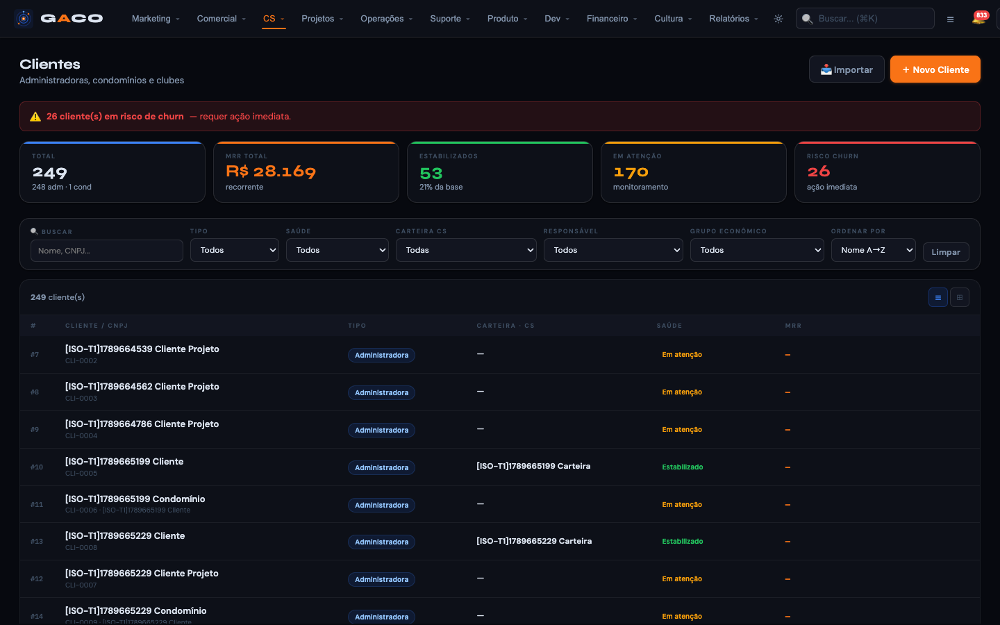
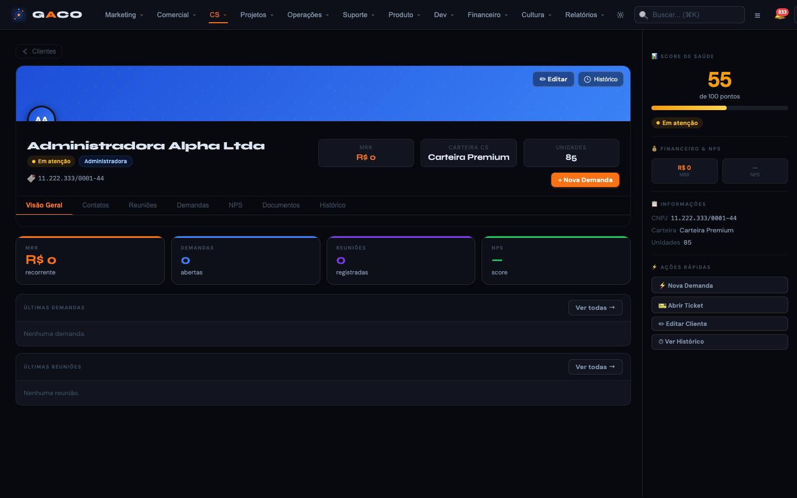
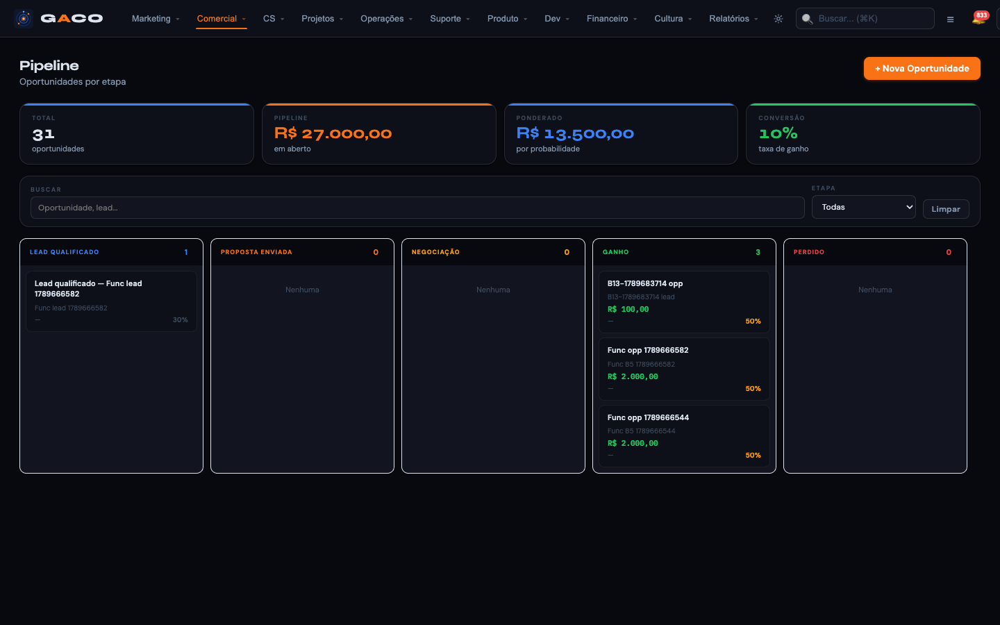
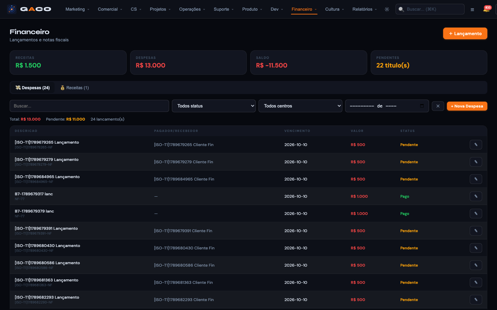
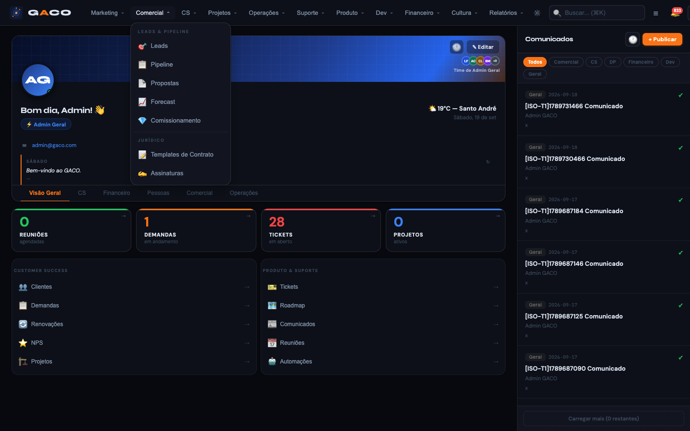
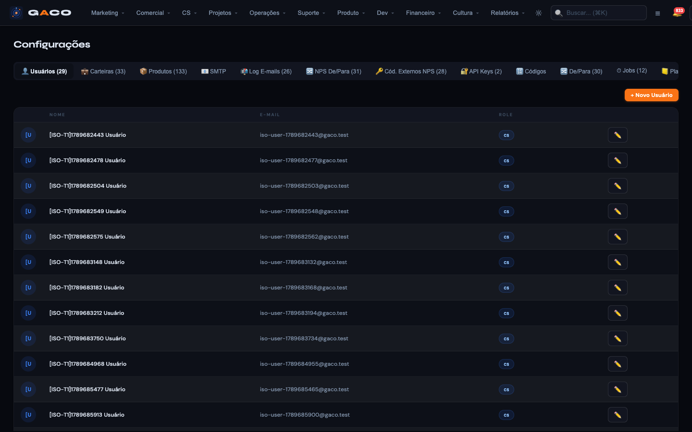
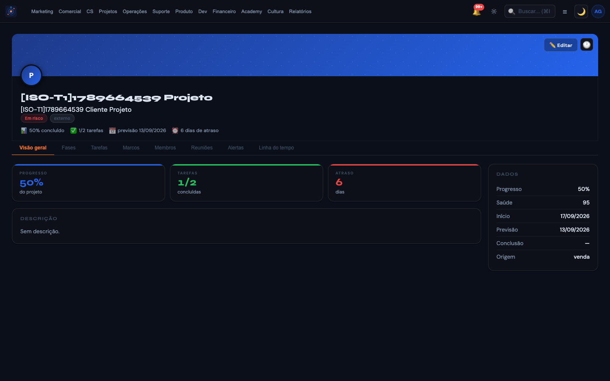
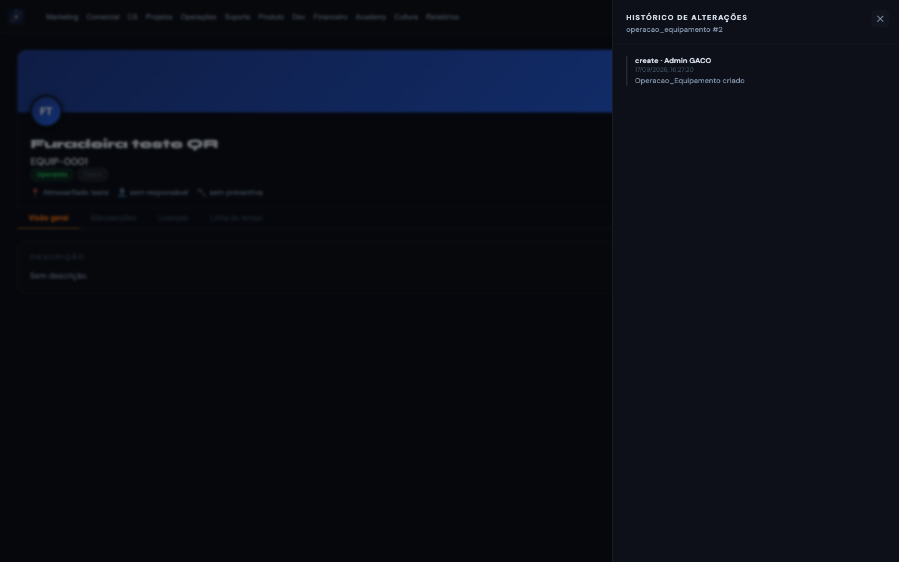
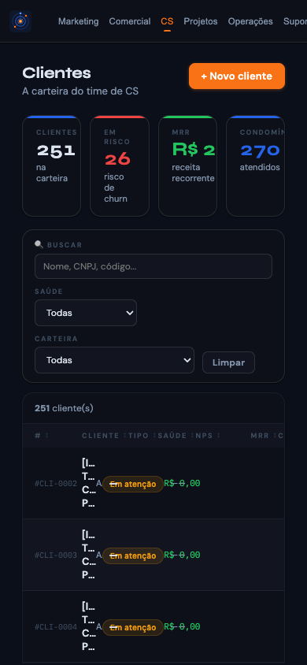
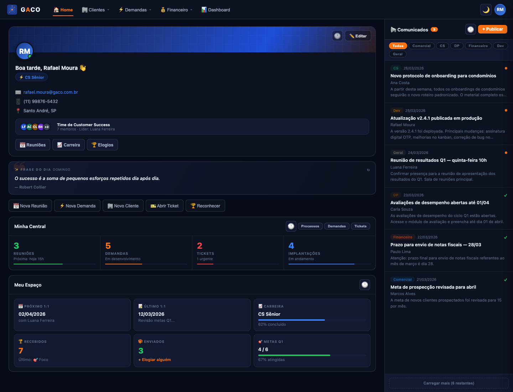
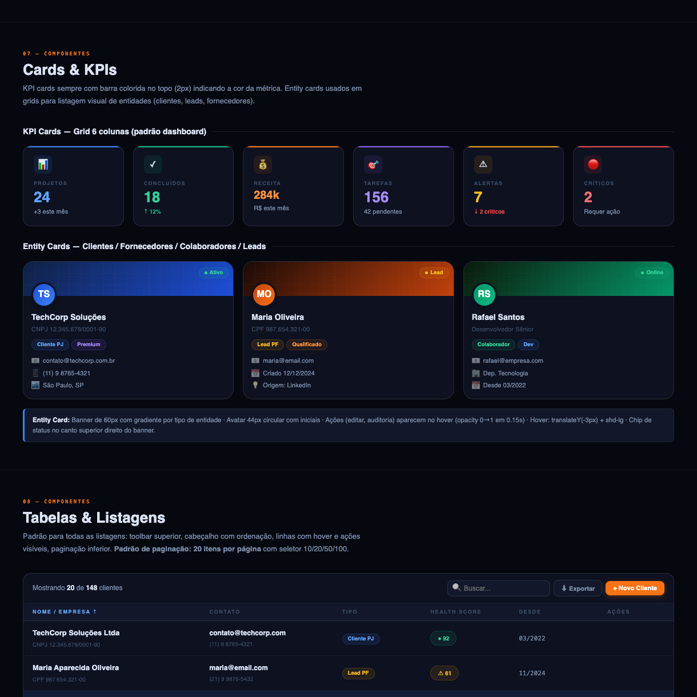
Histórico e revogados
| Peça | Situação | O que ainda serve |
|---|---|---|
Guia do Design System v3 (design-system.md, 28/03) | revogado 19/09 | Nada como valor visual. Documentava tokens, botões, formulários, tabelas, paginação, modais, drawer, kanban, detalhe, auditoria, estados e movimento do legado. |
| UX v5 (20/09): DM Sans + Syne + Plex Mono, KPI colorido em Syne, rótulo 11px caixa alta | não adotada 22/09 | A §9, que descreve as três cascas do código, e as medições de contraste da §3. |
legado.css | gerado, não editar | A estrutura das classes (card, btn, tbl-row); o tokens.css entra depois e redefine os valores. |
portal/gaco_app.html e SPA | legado | Referência de comportamento durante a migração; nunca de visual. 850 emojis, 27 tamanhos de fonte, 37 raios, 298 cores fixas. |
| Cores de módulo da v4 aprovada | substituídas 28/09 | Matiz mantido; só luminosidade e croma mudaram. |
| Gaveta de formulário de 480 (v4 §4.8) e confirmação de 420 | substituídas | Formulário vai para modal ou página; confirmação usa 560. |
| Lucide como biblioteca de ícones (D4, V4.2) | substituída 25/09 | O kit próprio de traço quadrado. |
Registros de trabalho
Trechos sobre design retirados dos registros das sessões: passagem de bastão, decisões autônomas e de execução, known-issues, lista única, fluxo e foco. Cada trecho foi filtrado por palavras de design e aparece como está no arquivo.
Documentos na íntegra
Os documentos de design do repositório, inteiros, como estão no commit integrado.